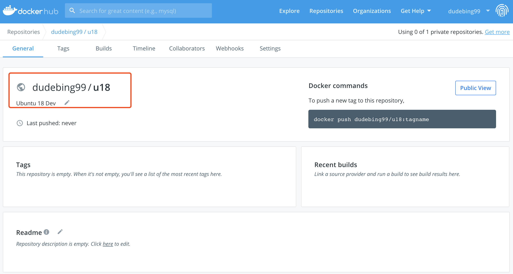
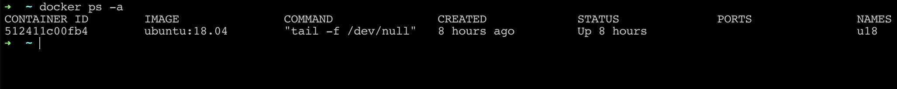
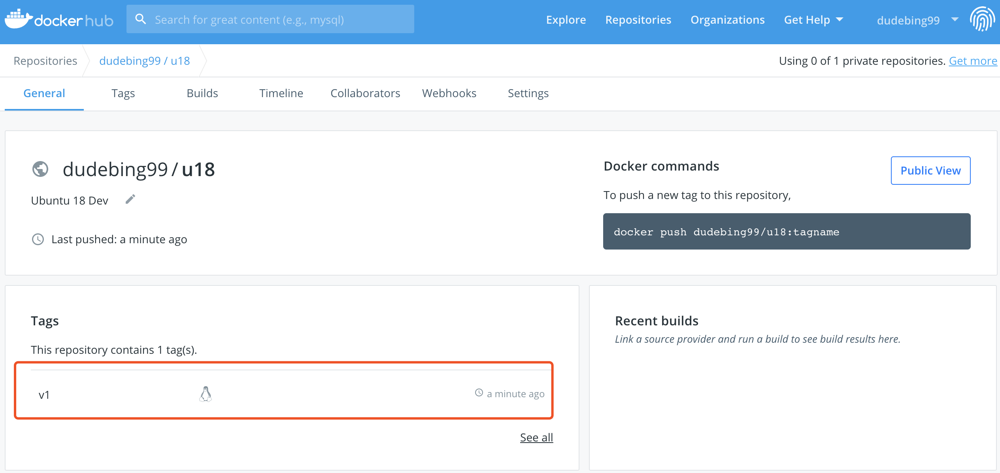
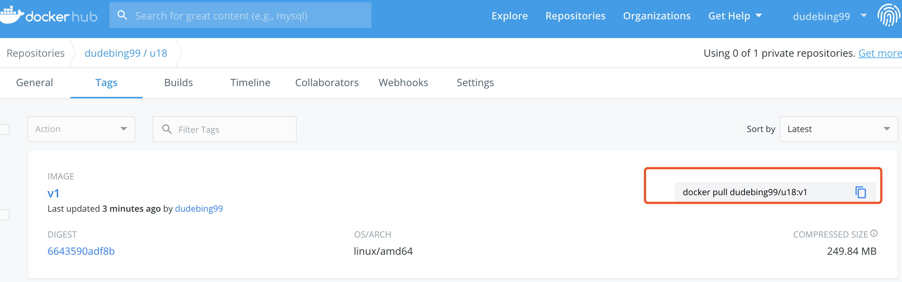

Git 客户端基本配置项Git .gitignoreVIM 基础配置VS Code 基础配置VS Code 快捷键VS Code 插件EditorConfig for Visual Studio CodeClang-FormatC/C++ 开发环境简易配置Typora Han 主题配置Makefile 模板Lets Encrypt 证书制作、使用证书制作证书更新综合使用安装配置 CURL 支持 http2安装依赖库安装 Python 2.7.3安装 nghttp2 v1.14.x安装 CURL 7.46.0确认 CURL 版本以及是否支持 http2Mail 发送邮件Visual Studio Code 配置 GoLang 开发环境Shell 终端提示符设置阿里云挂载磁盘DockerHub 上传镜像CentOS 安装配置 vsftpd授权用户访问模式匿名用户访问模式CentOS 安装配置 Apache Tomcat 9，支持 http2CentOS 配置 VNCCentOS 安装 Python 3.5CentOS 安装 ICECentOS 安装 GCC 4.9.2CentOS 配置 MySQLCentOS 安装 Redis 4.0.9CentOS 安装 RabbitMQCentOS 安装 SiegeCentOS/Ubuntu 安装 wrkCentOS 安装 pipCentOS 安装 MySQLdbCentOS 安装 protobuf 3.5.1CentOS 配置静态 IPCentOS 安装 locust 0.8.1CentOS 安装配置 zookeeper/kafkaGerrit 使用者初始配置CentOS 安装 gSOAP 2.8.18CentOS 安装 flaskCentOS 安装 telnetCentOS 安装 fioCentOS 配置 Nginx 用户认证Ubuntu 替换源Ubuntu 安装 golangUbuntu 安装 bitcoinUbuntu 安装 WaykiChainUbuntu 安装 ethereumUbuntu 安装 luaUbuntu 安装搜狗拼音输入法Ubuntu svn 提交编辑器Ubuntu 安装 vim 8.1Ubuntu 禁用 ipv6Ubuntu 设置语言环境为中文Ubuntu 设置静态 IPUbuntu 安装 eosUbuntu 安装 fioUbuntu 安装 NebulasWindows 安装 remix-ideWindows 安装 julia 1.0.0Windows 配置 GPG 签名 commitWindows 安装 bitcoin准备编译环境安装依赖库安装 bitcoinWindows 安装 ethereumWindows 安装配置 nodejs/npmWindows 安装 Git Bash 支持 wget/make/protocwgetmakeprotocMac 安装 libra
Git 客户端基本配置项
xxxxxxxxxx# 执行方式：命令行执行即可# 支持 utf-8 编码，显示中文文件名git config --global core.quotepath false# 提交/检出 不转换git config --global core.autocrlf false# 拒绝提交包含混合换行符的文件git config --global core.safecrlf truegit config --global alias.st statusgit config --global alias.co checkoutgit config --global alias.ct commitgit config --global alias.df diffgit config --global alias.br branchgit config --global color.ui truegit config --global alias.lg "log --color --graph --pretty=format:'%Cred%h%Creset %C(bold blue)<%an>%Creset ---%C(yellow)%d%Creset %s %Cgreen(%cr)' --abbrev-commit"# 指定 vim 作为默认的编辑器git config core.editor vim --globalgit config --global user.name xxgit config --global user.email xx@xxx.cnGit .gitignore
xxxxxxxxxx# From https://github.com/github/gitignore# Prerequisites*.d# Compiled Object files*.slo*.lo*.o*.obj# Precompiled Headers*.gch*.pch# Compiled Dynamic libraries*.so*.dylib*.dll# Fortran module files*.mod*.smod# Compiled Static libraries*.lai*.la*.a*.lib# Executables*.exe*.out*.app# CMakeCMakeCache.txtCMakeFilesCMakeScriptsTestingMakefilecmake_install.cmakeinstall_manifest.txtcompile_commands.jsonCTestTestfile.cmake# Config*.conf# Loglog/*.log# Generated binary file/directorydebug/release/bin/debugVIM 基础配置
VIM 配置文件位置：~/.vimrc
点此下载：vimrc（下载后重命名为 .vimrc）
xxxxxxxxxxset nocompatibleset backspace=indent,eol,startset incsearchset numberset hlsearchset ignorecaseset tabstop=4set shiftwidth=4set softtabstop=4set expandtabset fileencodings=utf-8,gbkset relativenumber " show relative line numberset ruler " show the current line number and column numberset showcmd " show the current typing commandset scrolloff=7 " Set 7 lines to the cursor - when moving vertically using j/kset encoding=utf-8set fileencodings=utf-8,ucs-bom,cp936,gb18030,big5,euc-jp,euc-kr,latin1set helplang=enset termencoding=utf-8set laststatus=2set cursorlineset guifont=Courier_New:h14:cANSIset history=9999set selection=exclusiveset selectmode=mouse,keyset fillchars=vert:\ ,stl:\ ,stlnc:\set showmatchset matchtime=1set linebreakset colorcolumn=100set wrapset tw=100let mapleader = "\<Space>"nmap <Leader><Leader> Vnnoremap <Leader>w :wq!<CR> "save file"nmap <leader><Space><Space> :%s/\s\+$//<CR> "trimTrailingWhitespace"" 自动补全 "" inoremap ( ()<ESC>i<CR><CR><ESC>k" inoremap [ []<ESC>i<CR><CR><ESC>k" inoremap { {}<ESC>i<CR><CR><ESC>k" inoremap " ""<ESC>i" inoremap ' ''<ESC>i" inoremap /* /* */<ESC>iimap jj <ESC>VS Code 基础配置
入口：文件 -> 首选项 -> 配置
备注：前两个配置项根据实际情况设置
xxxxxxxxxx{ "go.gopath": "d:\\go", "terminal.integrated.shell.windows": "C:\\Program Files\\Git\\bin\\bash.exe", "editor.wordWrapColumn": 100, "files.eol": "\n", "editor.insertSpaces": true, "editor.tabSize": 4, "files.trimTrailingWhitespace": true, "files.autoSave": "afterDelay", "editor.formatOnSave": true, "editor.formatOnPaste": true, "explorer.confirmDelete": true, "editor.detectIndentation": true, "team.showWelcomeMessage": false, "python.linting.flake8Enabled": true, "files.autoGuessEncoding": true}VS Code 快捷键
- 打开命令面板：
Ctrl Alt P - 查找文件：
Ctrl P - 结构导航：
Alt N - 跳转到指定行：
Alt G - 查找：
Ctrl F - 替换：
Ctrl H - 放大/缩小：
Ctrl +/Ctrl -
VS Code 插件
EditorConfig for Visual Studio Code
设置文件编码、换行、去除行末空白、Tab 等
- 安装插件
- 项目文件夹根目录创建这个文件
.editorconfig，内容如下
xxxxxxxxxxroot = true[*]charset = utf-8indent_style = spaceindent_size = 4end_of_line = lfinsert_final_newline = truetrim_trailing_whitespace = trueClang-Format
- 安装插件
- 设置编码风格（以谷歌编码风格为例，可以个性化调整）
在 setting.json 中添加如下配置项即可
xxxxxxxxxx"C_Cpp.clang_format_fallbackStyle": "{BasedOnStyle: Google, IndentWidth: 4, ColumnLimit: 150, AlignConsecutiveAssignments: true, AccessModifierOffset: -4}",C/C++ 开发环境简易配置
xxxxxxxxxx{ "explorer.confirmDelete": false, "editor.formatOnPaste": false, "files.trimTrailingWhitespace": true, "editor.formatOnSave": false, "files.autoSave": "afterDelay", "files.autoSaveDelay": 100, "files.eol": "\n", "editor.fontSize": 16, "C_Cpp.clang_format_style": "{BasedOnStyle: Google, IndentWidth: 4, ColumnLimit: 150 , AlignConsecutiveAssignments: true, AccessModifierOffset: -4}", "editor.insertSpaces": true, "editor.tabSize": 4, "C_Cpp.updateChannel": "Insiders", "[cpp]": { "editor.defaultFormatter": "ms-vscode.cpptools" }, "files.trimFinalNewlines": true}Typora Han 主题配置
在 Typora 主题配置目录新建 han，将如下内容保存为 han.css，点此下载，目录如下所示

xxxxxxxxxx@charset "utf-8";:root { --active-file-bg-color: #dadada; --active-file-bg-color: rgba(32, 43, 51, 0.63); --active-file-text-color: white; --bg-color: #fff; --text-color: #333; --side-bar-bg-color: #f5f5f5; --control-text-color: #666;}/* 防止用户自定义背景颜色对网页的影响，添加让用户可以自定义字体 */html { color: #333; background: #fff; text-size-adjust: 100%; text-size-adjust: 100%; text-rendering: optimizelegibility; font-size: 14px; font-smoothing: initial;}#write { max-width: 960px; padding-top: 2em; padding-left: 60px; padding-right: 60px; min-height: calc(100vh - 6em); font-smoothing: antialiased; font-size: 16px;}.typora-node #write { min-height: calc(100% - 6em);}pre.md-meta-block { background: #f5f5f5; padding: 1em; border-radius: 3px; font-size: 14px;}@media screen and (max-width: 800px) { html { font-size: 14px; } #write { padding-left: 30px; padding-right: 30px; font-size: 14px; }}@media screen and (min-width: 1100px) { body, #footer-word-count-info { background: #f5f5f5; } body.pin-outline, .pin-outline #footer-word-count-info, .pin-outline footer { background: #fff; } #write { max-width: 1000px; padding: 40px 60px; background: #fff; margin: 3em auto 3em; border: 1px solid #ddd; border-width: 0 1px; } .pin-outline #write { max-width: 1000px; background: #fff; margin: 0 0 0; border: 0; padding-left: 60px; padding-right: 60px; } footer { background-color: transparent; }}@media screen and (min-width: 1300px) { body.pin-outline, .pin-outline #footer-word-count-info, .pin-outline footer { background: #f5f5f5; } .pin-outline #write { max-width: 1000px; padding: 40px 60px; background: #fff; margin: 3em auto 3em; border: 1px solid #ddd; border-width: 0 1px; } .pin-outline footer { background-color: transparent; } #footer-word-count-info { background: #f5f5f5; }}/* 如果你的项目仅支持 IE9+ | Chrome | Firefox 等，推荐在 <html> 中添加 .borderbox 这个 class */html.borderbox *, html.borderbox *:before, html.borderbox *:after { box-sizing: border-box; box-sizing: border-box; box-sizing: border-box;}/* 内外边距通常让各个浏览器样式的表现位置不同 */body, dl, dt, dd, ul, ol, li, h1, h2, h3, h4, h5, h6, code, form, fieldset, legend, input, textarea, p, blockquote, th, td, hr, button, article, aside, details, figcaption, figure, footer, header, menu, nav, section { margin: 0; padding: 0;}/* 重设 HTML5 标签, IE 需要在 js 中 createElement(TAG) */article, aside, details, figcaption, figure, footer, header, menu, nav, section { display: block;}/* HTML5 媒体文件跟 img 保持一致 */audio, canvas, video { display: inline-block;}/* 要注意表单元素并不继承父级 font 的问题 */body, button, input, select, textarea { font: 300 1em/1.8 "PingFang SC", "Lantinghei SC", "Microsoft Yahei", "Hiragino Sans GB", "Microsoft Sans Serif", "WenQuanYi Micro Hei", sans;}body { font-family: "PingFang SC", "Lantinghei SC", "Microsoft Yahei", "Hiragino Sans GB", "Microsoft Sans Serif", "WenQuanYi Micro Hei", sans;}h1, h2, h3, h4, h5, h6 { font-family: "TimesNewRomanPS-ItalicMT", "PingFang SC", "Lantinghei SC", "Microsoft Yahei", "Hiragino Sans GB", "Microsoft Sans Serif", "WenQuanYi Micro Hei", sans; /*font-family: "PingFang SC", "Lantinghei SC", "Microsoft Yahei", "Hiragino Sans GB", "Microsoft Sans Serif", "WenQuanYi Micro Hei", sans;*/ font-smoothing: initial; font-weight: 100; color: var(--text-color); line-height: 1.35; font-variant-numeric: lining-nums; margin-bottom: 1em;}em { font-family: Georgia-Italic, STSongti-SC-Light, serif;}strong em,em strong { font-family: Georgia-BoldItalic, STSongti-SC-Regular, serif;}button::focus-inner,input::focus-inner { padding: 0; border: 0;}/* 去掉各Table cell 的边距并让其边重合 */table { border-collapse: collapse; border-spacing: 0;}/* 去除默认边框 */fieldset, img { border: 0;}/* 块/段落引用 */blockquote { position: relative; color: #999; font-weight: 400; border-left: 1px solid #1abc9c; padding-left: 1em; margin: 1em 3em 1em 2em;}@media only screen and ( max-width: 640px ) { blockquote { margin: 1em 0; }}/* Firefox 以外，元素没有下划线，需添加 */acronym, abbr { border-bottom: 1px dotted; font-variant: normal;}/* 添加鼠标问号，进一步确保应用的语义是正确的（要知道，交互他们也有洁癖，如果你不去掉，那得多花点口舌） */abbr { cursor: help;}address, caption, cite, code, dfn, th, var { font-style: normal; font-weight: 400;}/* 去掉列表前的标识, li 会继承，大部分网站通常用列表来很多内容，所以应该当去 */ul, ol { list-style: none;}/* 对齐是排版最重要的因素, 别让什么都居中 */caption, th { text-align: left;}q:before, q:after { content: '';}/* 统一上标和下标 */sub, sup { font-size: 75%; line-height: 0; position: relative;}:root sub, :root sup { vertical-align: baseline; /* for ie9 and other modern browsers */}sup { top: -0.5em;}sub { bottom: -0.25em;}/* 让链接在 hover 状态下显示下划线 */a { color: #1abc9c;}a:hover { text-decoration: underline;}#write a { border-bottom: 1px solid #1abc9c;}#write a:hover { border-bottom-color: #555; color: #555; text-decoration: none;}/* 默认不显示下划线，保持页面简洁 */ins, a { text-decoration: none;}/* 标记，类似于手写的荧光笔的作用 */mark { background: #fffdd1; border-bottom: 1px solid #ffedce; padding: 2px; margin: 0 5px;}/* 代码片断 */pre, code, pre tt { font-family: Courier, 'Courier New', monospace;}#write .md-fences { border: 1px solid #ddd; padding: 1em 0.5em; display: block; overflow-scrolling: touch;}/* 一致化 horizontal rule */hr { border: none; border-bottom: 1px solid #cfcfcf; margin-bottom: 0.8em; height: 10px;}#write strong { font-weight: 900; color:#383838; /*font-weight: bloder; /*color: #000;*/}.code-tooltip.md-hover-tip strong { color: white;}/* 保证块/段落之间的空白隔行 */#write p, #write .md-fences, #write ul, #write ol, #write dl, #write form, #write hr, #write figure,#write-p, #write-pre, #write-ul, #write-ol, #write-dl, #write-form, #write-hr, #write-table, blockquote { margin-bottom: 1.2em}html { font-family: PingFang SC, Verdana, Helvetica Neue, Microsoft Yahei, Hiragino Sans GB, Microsoft Sans Serif, WenQuanYi Micro Hei, sans-serif;}/* 标题应该更贴紧内容，并与其他块区分，margin 值要相应做优化 */#write h1, #write h2, #write h3, #write h4, #write h5, #write h6,#write-h1, #write-h2, #write-h3, #write-h4, #write-h5, #write-h6 { margin-top: 1.2em; margin-bottom: 0.6em; line-height: 1.35; color: #000;}#write h1, #write-h1 { font-size: 2.4em; padding-bottom: 1em; border-bottom: 3px double #eee;}#write h2, #write-h2 { font-size: 1.8em;}#write h3, #write-h3 { font-size: 1.6em;}#write h4, #write-h4 { font-size: 1.4em;}#write h5, #write h6, #write-h5, #write-h6 { font-size: 1.2em;}/* 在文章中，应该还原 ul 和 ol 的样式 */#write ul, #write-ul { margin-left: 1.3em; list-style: disc;}#write ol, #write-ol { list-style: decimal; margin-left: 1.9em;}#write li ul, #write li ol, #write-ul ul, #write-ul ol, #write-ol ul, #write-ol ol { margin-bottom: 0.8em; margin-left: 2em;}#write li ul, #write-ul ul, #write-ol ul { list-style: circle;}#write table th, #write table td { border: 1px solid #ddd; padding: 0.5em 1em; color: #666;}#write table .md-table-edit th { border: none; padding: 0; color: inherit;}#write table th, #write-table th { background: #fbfbfb;}#write table thead th, #write-table thead th { background: #f1f1f1;}#write table caption { border-bottom: none;}#write em { font-weight: inherit; font-style: inherit;}li>p { margin-bottom: 0 !important;}/* Responsive images */#write img { max-width: 100%;}a.md-toc-inner { border-bottom: 0 !important;}.md-toc-h1:first-of-type:last-of-type{ display: none;}.md-toc { font-size: inherit;}.md-toc-h1 .md-toc-inner { font-weight: normal;}.md-table-edit th { padding: 0 !important; border: 0 !important;}.mac-seamless-mode #write { min-height: calc(100vh - 6em - 20px);}.typora-quick-open-item.active { color: var(--active-file-text-color);}*.in-text-selection, ::selection { background: var(--active-file-bg-color); text-shadow: none; color: white;}.btn-primary { background-color: #2d2d2d; border-color: #020202;}.btn-primary:hover, .btn-primary:focus, .btn-primary.focus, .btn-primary:active, .btn-primary.active, .open > .dropdown-toggle.btn-primary { background-color: #4e4c4e; border: #4e4c4e;}#preference-dialog .modal-content{ background: #6e757a; --bg-color: #6e757a; --text-color: #f1f1f1; color: #f1f1f1;}#typora-source,.typora-sourceview-on { --bg-color: #eee; background: #eee;}.cm-s-typora-default .cm-header, .cm-s-typora-default .cm-property { color: #116098;}.cm-s-typora-default .cm-link { color: #11987d;}.cm-s-typora-default .cm-em { font-family: Georgia-Italic, STSongti-SC-Light, serif; color: #6f6400;}.cm-s-typora-default .cm-em{ color: rgb(0, 22, 45);}.CodeMirror.cm-s-typora-default div.CodeMirror-cursor{ border-left: 3px solid #6e757a;}.cm-s-typora-default .CodeMirror-selectedtext,.typora-sourceview-on .CodeMirror-focused .CodeMirror-selected { background: #6e757a; color: white;}.file-node-icon.fa.fa-folder:before { color: rgba(32, 43, 51, 0.49);}#preference-dialog .megamenu-menu-panel h1 { margin-bottom: 1em;}::scrollbar-corner { display: none; background: transparent;}.cm-s-inner { background-color: #263238; color: rgba(233, 237, 237, 1);}.cm-s-inner .CodeMirror-gutters { background: #263238; color: rgb(83,127,126); border: none;}.cm-s-inner .CodeMirror-guttermarker, .cm-s-inner .CodeMirror-guttermarker-subtle, .cm-s-inner .CodeMirror-linenumber { color: rgb(83,127,126); }.cm-s-inner .CodeMirror-cursor { border-left: 1px solid #f8f8f0; }.cm-s-inner div.CodeMirror-selected { background: rgba(255, 255, 255, 0.15); }.cm-s-inner.CodeMirror-focused div.CodeMirror-selected { background: rgba(255, 255, 255, 0.10); }.cm-s-inner .CodeMirror-line::selection, .cm-s-inner .CodeMirror-line > span::selection, .cm-s-inner .CodeMirror-line > span > span::selection { background: rgba(255, 255, 255, 0.10); }.cm-s-inner .CodeMirror-line::selection, .cm-s-inner .CodeMirror-line > span::selection, .cm-s-inner .CodeMirror-line > span > span::selection { background: rgba(255, 255, 255, 0.10); }.cm-s-inner .CodeMirror-activeline-background { background: rgba(0, 0, 0, 0); }.cm-s-inner .cm-keyword { color: rgba(199, 146, 234, 1); }.cm-s-inner .cm-operator { color: rgba(233, 237, 237, 1); }.cm-s-inner .cm-variable-2 { color: #80CBC4; }.cm-s-inner .cm-variable-3 { color: #82B1FF; }.cm-s-inner .cm-builtin { color: #DECB6B; }.cm-s-inner .cm-atom { color: #F77669; }.cm-s-inner .cm-number { color: #F77669; }.cm-s-inner .cm-def { color: rgba(233, 237, 237, 1); }.cm-s-inner .cm-string { color: #C3E88D; }.cm-s-inner .cm-string-2 { color: #80CBC4; }.cm-s-inner .cm-comment { color: #546E7A; }.cm-s-inner .cm-variable { color: #82B1FF; }.cm-s-inner .cm-tag { color: #80CBC4; }.cm-s-inner .cm-meta { color: #80CBC4; }.cm-s-inner .cm-attribute { color: #FFCB6B; }.cm-s-inner .cm-property { color: #80CBAE; }.cm-s-inner .cm-qualifier { color: #DECB6B; }.cm-s-inner .cm-variable-3 { color: #DECB6B; }.cm-s-inner .cm-tag { color: rgba(255, 83, 112, 1); }.cm-s-inner .cm-error { color: rgba(255, 255, 255, 1.0); background-color: #EC5F67;}.cm-s-inner .CodeMirror-matchingbracket { text-decoration: underline; color: white !important;}/**apply to code fences with plan text**/.md-fences { background-color: #263238; color: rgba(233, 237, 237, 1); border: none;}.md-fences .code-tooltip { background-color: #263238;}Makefile 模板
xxxxxxxxxxINCLUDES := -I. -I./include -I/opt/Ice-3.5.1/includeLIBS := -Wl,--enable-new-dtags -Wl,-rpath,/opt/Ice-3.5/lib64LIBS += -Wl,-Bstatic -L./lib -lcpp_redis -ltacopieLIBS += -Wl,-Bdynamic -L/opt/Ice-3.5.1/lib64 -lIce -lIceUtilCXX := g++ -std=c++11CXXFLAGS := -rdynamic -m64 -Wall -Wextra -pthread -fPIC -g $(INCLUDES)# 把所有警告当做错误：-Werror，支持 C++ 11：-std=c++11CXXFLAGS += -Werror -std=c++11TARGETS := serverTARGETS += clientall: $(TARGETS)db.cpp db.h: db.ice slice2cpp $^server: db.o dbi.o server.o $(CXX) -o $@ $^ $(LIBS)client: db.o dbi.o client.o $(CXX) -o $@ $^ $(LIBS)clean: rm -f *.o $(TARGETS)Lets Encrypt 证书制作、使用
证书制作
- 获取 certbot 客户端
xxxxxxxxxxwget https://dl.eff.org/certbot-autochmod a+x certbot-auto- 生成证书
xxxxxxxxxx/opt/certbot-auto certonly --webroot -w /usr/share/nginx/html --agree-tos --email xuchao@danbay.cn -d api.danbay.cn
- 查看证书文件
xxxxxxxxxxtree /etc/letsencrypt/live/
证书更新
xxxxxxxxxx# 证书默认 90 有效，更新不能太频繁，同一域名一周之内最多只能更新5次/opt/certbot-auto renew --quiet --no-self-upgrade综合使用
基础环境：Nginx 1.12.2/CentOS 7.4
域名解析：bigsillybear.com/api.bigsillybear.com
证书：bigsillybear.com/api.bigsillybear.com
目标：
Nginx监听 80、443、11111 端口，且反向代理 10000 端口- 支持
http://bigsillybear.com与https://bigsillybear.com - 只支持
https://bigsllybear.com:11111 - 支持
https://api.bigsillybear.com
xxxxxxxxxx# For more information on configuration, see:# * Official English Documentation: http://nginx.org/en/docs/# * Official Russian Documentation: http://nginx.org/ru/docs/user nginx;worker_processes auto;error_log /var/log/nginx/error.log;pid /run/nginx.pid;# Load dynamic modules. See /usr/share/nginx/README.dynamic.include /usr/share/nginx/modules/*.conf;events { worker_connections 1024;}http { log_format main '$remote_addr - $remote_user [$time_local] "$request" ' '$status $body_bytes_sent "$http_referer" ' '"$http_user_agent" "$http_x_forwarded_for"'; access_log /var/log/nginx/access.log main; sendfile on; tcp_nopush on; tcp_nodelay on; keepalive_timeout 65; types_hash_max_size 2048; include /etc/nginx/mime.types; default_type application/octet-stream; # Load modular configuration files from the /etc/nginx/conf.d directory. # See http://nginx.org/en/docs/ngx_core_module.html#include # for more information. include /etc/nginx/conf.d/*.conf; server { listen 80 default_server; listen [::]:80 default_server; server_name _; root /usr/share/nginx/html; # Load configuration files for the default server block. include /etc/nginx/default.d/*.conf; location / { } error_page 404 /404.html; location = /40x.html { } error_page 500 502 503 504 /50x.html; location = /50x.html { } } # Settings for a TLS enabled server. server { listen 443 ssl http2 default_server; listen [::]:443 ssl http2 default_server; server_name bigsillybear.com; root /usr/share/nginx/html; ssl_certificate "/etc/letsencrypt/live/bigsillybear.com/fullchain.pem"; ssl_certificate_key "/etc/letsencrypt/live/bigsillybear.com/privkey.pem"; ssl_session_cache shared:SSL:1m; ssl_session_timeout 10m; ssl_ciphers HIGH:!aNULL:!MD5; ssl_prefer_server_ciphers on; # Load configuration files for the default server block. include /etc/nginx/default.d/*.conf; location / { } error_page 404 /404.html; location = /40x.html { } error_page 500 502 503 504 /50x.html; location = /50x.html { } } server { listen 11111; listen [::]:11111; server_name bigsillybear.com; root /usr/share/nginx/html; ssl on; error_page 497 https://$host:443$uri; #error_page 497 https://$host:443$request_uri?$args; ssl_certificate "/etc/letsencrypt/live/bigsillybear.com/fullchain.pem"; ssl_certificate_key "/etc/letsencrypt/live/bigsillybear.com/privkey.pem"; ssl_session_cache shared:SSL:1m; ssl_session_timeout 10m; ssl_ciphers HIGH:!aNULL:!MD5; ssl_prefer_server_ciphers on; # Load configuration files for the default server block. include /etc/nginx/default.d/*.conf; location / { } error_page 404 /404.html; location = /40x.html { } error_page 500 502 503 504 /50x.html; location = /50x.html { } } upstream api_server { server 127.0.0.1:10000; } server { listen 443; listen [::]:443; server_name api.bigsillybear.com; root /usr/share/nginx/html; ssl_certificate "/etc/letsencrypt/live/api.bigsillybear.com/fullchain.pem"; ssl_certificate_key "/etc/letsencrypt/live/api.bigsillybear.com/privkey.pem"; ssl_session_cache shared:SSL:1m; ssl_session_timeout 10m; ssl_ciphers HIGH:!aNULL:!MD5; ssl_prefer_server_ciphers on; # Load configuration files for the default server block. include /etc/nginx/default.d/*.conf; location / { proxy_redirect off; proxy_set_header Host $host; proxy_set_header X-Real-IP $remote_addr; proxy_set_header X-Forwarded-For $proxy_add_x_forwarded_for; proxy_pass http://api_server; } error_page 404 /404.html; location = /40x.html { } error_page 500 502 503 504 /50x.html; location = /50x.html { } }}验证结果
xxxxxxxxxxroot@iZwz978rorvlg75nct99l1Z:~# curl -I http://bigsillybear.comHTTP/1.1 200 OKServer: nginx/1.12.2Date: Wed, 14 Nov 2018 09:16:03 GMTContent-Type: text/htmlContent-Length: 3700Last-Modified: Tue, 06 Mar 2018 09:26:21 GMTConnection: keep-aliveETag: "5a9e5ebd-e74"Accept-Ranges: bytesroot@iZwz978rorvlg75nct99l1Z:~# curl -I https://bigsillybear.comHTTP/1.1 200 OKServer: nginx/1.12.2Date: Wed, 14 Nov 2018 09:16:06 GMTContent-Type: text/htmlContent-Length: 3700Last-Modified: Tue, 06 Mar 2018 09:26:21 GMTConnection: keep-aliveETag: "5a9e5ebd-e74"Accept-Ranges: bytesxxxxxxxxxxroot@iZwz978rorvlg75nct99l1Z:~# curl https://bigsillybear.com:11111 -IHTTP/1.1 200 OKServer: nginx/1.12.2Date: Wed, 14 Nov 2018 08:59:57 GMTContent-Type: text/htmlContent-Length: 3700Last-Modified: Tue, 06 Mar 2018 09:26:21 GMTConnection: keep-aliveETag: "5a9e5ebd-e74"Accept-Ranges: bytesroot@iZwz978rorvlg75nct99l1Z:~# curl http://bigsillybear.com:11111 -IHTTP/1.1 302 Moved TemporarilyServer: nginx/1.12.2Date: Wed, 14 Nov 2018 09:00:04 GMTContent-Type: text/htmlContent-Length: 161Connection: closeLocation: https://bigsillybear.com:443/xxxxxxxxxxroot@iZwz978rorvlg75nct99l1Z:~# curl http://bigsillybear.com:10000/{ "id": 0, "message": "hello world"}root@iZwz978rorvlg75nct99l1Z:~# curl https://api.bigsillybear.com/{ "id": 0, "message": "hello world"}由于
api.bigsillybear.com只针对 443 端口（未针对 80 端口）配置了规则，相当于只配置了客户端访问https://api.bigsillybear.com的规则而未配置http://api.bigsillybear.com的规则，使用curl https://api.bigsillybear.com/将自动匹配到http://bigsillybear.com
使用谷歌浏览器，查看证书信息如下


安装配置 CURL 支持 http2
###基础环境
- CentOS 6.8
- Python 2.6.6
- CURL 7.19.7
安装依赖库
xxxxxxxxxxyum install -y readline-devel sqlite-devel lz4 lz4-devel gdbm gdbm-devel bzip2 openssl openssl-devel libdbi-devel ncurses-libs zlib-devel _bsddb bz2 dl安装 Python 2.7.3
nghttp2 依赖 Python 2.7.x
xxxxxxxxxx# 下载、安装 Python 2.7.3wget http://python.org/ftp/python/2.7.3/Python-2.7.3.tar.bz2tar -jxvf Python-2.7.3.tar.bz2cd Python-2.7.3./configuremake -j4 allmake install# 修复其他服务（如，YUM）对旧版本 Python 2.6.6 的依赖mv /usr/bin/python /usr/bin/python-2.6.6ln -sf /usr/local/bin/python2.7 /usr/bin/pythonsed -i "s/#\!\/usr\/bin\/python/#\!\/usr\/bin\/python-2.6.6/" /usr/bin/yum安装 nghttp2 v1.14.x
CURL 依赖 nghttp2 提供对 http2 的支持，因此，需要先安装 nghttp2
xxxxxxxxxxgit clone https://github.com/tatsuhiro-t/nghttp2.gitcd nghttp2# 默认 master 分支，切换到特定的分支，例如 v1.14.xgit checkout -b v1.14.x origin/v1.14.xautoreconf -iautomakeautoconf./configuremake -j4make installecho '/usr/local/lib' > /etc/ld.so.conf.d/local.confldconfig# 查看 nghttp2[root@localhost curl-7.46.0]# whereis libnghttp2libnghttp2: /usr/local/lib/libnghttp2.a /usr/local/lib/libnghttp2.la /usr/local/lib/libnghttp2.so安装 CURL 7.46.0
xxxxxxxxxx# 安装 CURL 7.46.0wget http://curl.haxx.se/download/curl-7.46.0.tar.bz2tar -xvjf curl-7.46.0.tar.bz2cd curl-7.46.0./configure --with-nghttp2=/usr/local --with-sslmake -j4make install# 替换旧版本ln -sf /usr/local/bin/curl /usr/bin/curl确认 CURL 版本以及是否支持 http2
xxxxxxxxxx# 查看 CURL 版本以及所有支持的协议、特性[root@localhost curl-7.46.0]# curl --versioncurl 7.46.0 (x86_64-pc-linux-gnu) libcurl/7.46.0 OpenSSL/1.0.1e zlib/1.2.3 nghttp2/1.14.1Protocols: dict file ftp ftps gopher http https imap imaps pop3 pop3s rtsp smb smbs smtp smtps telnet tftpFeatures: IPv6 Largefile NTLM NTLM_WB SSL libz HTTP2 UnixSockets# 如下提示则表明此版本 CURL 支持 http2[root@localhost curl-7.46.0]# curl --http2 -I https://nghttp2.org/HTTP/2.0 200date:Thu, 12 Apr 2018 16:31:22 GMTcontent-type:text/htmllast-modified:Thu, 12 Apr 2018 15:17:17 GMTetag:"5acf787d-19d8"accept-ranges:bytescontent-length:6616x-backend-header-rtt:0.001775strict-transport-security:max-age=31536000server:nghttpxvia:2 nghttpxx-frame-options:SAMEORIGINx-xss-protection:1; mode=blockx-content-type-options:nosniffMail 发送邮件
- 配置 /etc/mail.rc
xxxxxxxxxxset from=xuchao@bigsillybear.com smtp="smtp.bigsillybear.com"set smtp-auth-user="xuchao@bigsillybear.com" smtp-auth-password="HiBigsillybear"set smtp-auth=login- 发送邮件
xxxxxxxxxx# 发送主题为 test，邮件正文为 ca.pem 文件内容，包含附件 ca.pem 的邮件到 cloud_dev@bigsillybear.commail -s "test" -a ca.pem cloud_dev@bigsillybear.com < ca.pem# 发送主题为 test，邮件正文为 hello world 的邮件到 cloud_dev@bigsillybear.comecho "hello world"|mail -s "test" cloud_dev@bigsillybear.comVisual Studio Code 配置 GoLang 开发环境
- 官网下载 GoLang 安装包，安装之后 go version 查看版本
xxxxxxxxxx$ go versiongo version go1.10.1 windows/amd64安装时勾选添加环境变量，不需要单独添加环境变量；否则，需要新添加环境变量，如下：
计算机（右键）-> 属性 -> 高级系统设置 -> 高级 -> 环境变量 -> 系统变量
- 添加 变量名
GOROOT，值为安装目录，如C:\app\Go\ - 变量名
Path，追加值C:\app\Go\bin;
- 设置环境变量
GOPATH，具体操作如步骤 1 所示，值为后续你存放源码的目录，如D:\go - 打开
Git Bash，设置Go Module全局代理，依次安装如下依赖项
xxxxxxxxxx# Enable the go modules featureexport GO111MODULE=on# Set the GOPROXY environment variableexport GOPROXY=https://goproxy.ioxxxxxxxxxxgo get -u -v github.com/nsf/gocodego get -u -v github.com/rogpeppe/godefgo get -u -v github.com/golang/lint/golintgo get -u -v github.com/lukehoban/go-outlinego get -u -v sourcegraph.com/sqs/goreturnsgo get -u -v golang.org/x/tools/cmd/gorenamego get -u -v github.com/tpng/gopkgsgo get -u -v github.com/newhook/go-symbolsgo get -u -v golang.org/x/tools/cmd/guru# 可选择性下载# protobuf 相关，需要安装 protocgo get -u -v github.com/golang/protobuf/protoc-gen-gogo get -u -v github.com/golang/protobuf/proto# grpcgo get -u -v google.golang.org/grpc- 安装 VS Code
- 安装 VS Code 各种插件，打开 VS Code，按 Ctrl+Shift+P，输入 install ext，输入 go，选中安装即可
VS Code 支持各种语法，同理，安装对应的插件即可，如，需要支持 C++，安装 C++ 插件即可
Shell 终端提示符设置
xxxxxxxxxxPS1 是 linux 里头的一个默认的环境变量，用来设置命令提示符的环境变量。 \d ：代表日期，格式为 weekday month date，例如："Mon Aug 1" \H ：完整的主机名称。例如：我的机器名称为：fc4.linux，则这个名称就是 fc4.linux \h ：仅取主机的第一个名字，如上例，则为 fc4，.linux 则被省略 \t ：显示时间为 24 小时格式，如：HH：MM：SS \T ：显示时间为 12 小时格式 \A ：显示时间为 24 小时格式：HH：MM \u ：当前用户的账号名称 \v ：BASH 的版本信息 \w ：完整的工作目录名称。家目录会以 ~ 代替 \W ：利用 basename 取得工作目录名称，所以只会列出最后一个目录 \# ：下达的第几个命令 \$ ：提示字符，如果是 root 时，提示符为：# ，普通用户则为：$目标：让 shell 只显示最后一个目录名而不显示完整的路径，并且不显示主机名
- 编辑 ~/.bashrc，将所有的 PS1 中的 \w 替换为 \W，并去掉 @\h
- 重新打开终端即可生效
修改前
xxxxxxxxxxroot@ibc-VirtualBox:~/chaincode/tmp#修改后
xxxxxxxxxxroot:fabric#阿里云挂载磁盘
- 查看系统分件格式
xxxxxxxxxx[root@ ~]# df -h -T/dev/vda1 ext4 40G 4.6G 33G 13% /devtmpfs devtmpfs 7.5G 0 7.5G 0% /devtmpfs tmpfs 7.6G 0 7.6G 0% /dev/shmtmpfs tmpfs 7.6G 344K 7.6G 1% /runtmpfs tmpfs 7.6G 0 7.6G 0% /sys/fs/cgrouptmpfs tmpfs 1.6G 0 1.6G 0% /run/user/0- 查看未挂载磁盘
xxxxxxxxxx[root@ ~]# fdisk -lDisk /dev/vda: 42.9 GB, 42949672960 bytes, 83886080 sectorsUnits = sectors of 1 * 512 = 512 bytesSector size (logical/physical): 512 bytes / 512 bytesI/O size (minimum/optimal): 512 bytes / 512 bytesDisk label type: dosDisk identifier: 0x000d2717 Device Boot Start End Blocks Id System/dev/vda1 * 2048 83884031 41940992 83 LinuxDisk /dev/vdb: 1099.5 GB, 1099511627776 bytes, 2147483648 sectorsUnits = sectors of 1 * 512 = 512 bytesSector size (logical/physical): 512 bytes / 512 bytesI/O size (minimum/optimal): 512 bytes / 512 bytes- 挂载磁盘
xxxxxxxxxx[root@ ~]# mount /dev/vdb /data- 确认已挂载
卸载磁盘
umount /data即可
xxxxxxxxxx[root@ ~]# df -h -TFilesystem Type Size Used Avail Use% Mounted on/dev/vda1 ext4 40G 4.6G 33G 13% /devtmpfs devtmpfs 7.5G 0 7.5G 0% /devtmpfs tmpfs 7.6G 0 7.6G 0% /dev/shmtmpfs tmpfs 7.6G 344K 7.6G 1% /runtmpfs tmpfs 7.6G 0 7.6G 0% /sys/fs/cgrouptmpfs tmpfs 1.6G 0 1.6G 0% /run/user/0/dev/vdb ext4 1008G 40G 918G 5% /dataDockerHub 上传镜像
- https://hub.docker.com/ 注册账户，并创建镜像仓库

- 基于已有容器创建镜像
镜像仓库为
dudebing99/u18，镜像 tag 为v1

xxxxxxxxxx➜ ~ docker commit 512411c00fb4 dudebing99/u18:v1sha256:a51369e90faf0ff8be95942e6999613ba8e3081f9ad66e7e1ae092a75b46aa29- 查看本地镜像
xxxxxxxxxx➜ ~ docker imagesREPOSITORY TAG IMAGE ID CREATED SIZEdudebing99/u18 v1 a51369e90faf 43 seconds ago 745MBubuntu 16.04 56bab49eef2e 2 months ago 123MBubuntu 18.04 775349758637 2 months ago 64.2MBcentos latest 0f3e07c0138f 3 months ago 220MBubuntu 14.04 2c5e00d77a67 8 months ago 188MBmysql 5.7.21 5195076672a7 22 months ago 371MB- 上传镜像到 DockerHub
命令格式：
docker push <hub-user>/<repo-name>:<tag>
xxxxxxxxxx➜ ~ docker push dudebing99/u18:v1The push refers to repository [docker.io/dudebing99/u18]ec2f7e3800b2: Pushedv1: digest: sha256:6643590adf8bd4301008e6fc72ad0443c1a1cc21510e050ba8ec5445a15a9ef1 size: 1365- 查看镜像

查看镜像详情，拉取镜像命令 docker pull dudebing99/u18:v1

- 从 DockerHub 拉取镜像
xxxxxxxxxxroot@ubuntu:~# docker imagesREPOSITORY TAG IMAGE ID CREATED SIZEroot@ubuntu:~# docker pull dudebing99/u18:v1v1: Pulling from dudebing99/u187ddbc47eeb70: Pull complete c1bbdc448b72: Pull complete 8c3b70e39044: Pull complete 45d437916d57: Pull complete 97b648407d44: Pull complete Digest: sha256:6643590adf8bd4301008e6fc72ad0443c1a1cc21510e050ba8ec5445a15a9ef1Status: Downloaded newer image for dudebing99/u18:v1root@ubuntu:~# docker imagesREPOSITORY TAG IMAGE ID CREATED SIZEdudebing99/u18 v1 a51369e90faf 5 hours ago 745MBroot@ubuntu:~# docker search dudebing99NAME DESCRIPTION STARS OFFICIAL AUTOMATEDdudebing99/u18 Ubuntu 18 Dev 0 CentOS 安装配置 vsftpd
授权用户访问模式
xxxxxxxxxx0. 运行环境：Cent OS 6.8/vsftpd 2.2.21. 安装配置vsftpdyum install vsftpd ftp -ychkconfig vsftpd on2. 添加用户> useradd -d /home/ftp -g ftp -s /sbin/nologin XXXftp -p XXX123!> passwd XXXftp3. 修改配置 /etc/vsftpd/vsftpd.confanonymous_enable=NOlocal_enable=YESwrite_enable=YESlocal_umask=022dirmessage_enable=YESxferlog_enable=YESconnect_from_port_20=YESxferlog_std_format=YESftpd_banner=Welcome to FTP service.listen=YESpam_service_name=vsftpduserlist_enable=YESuserlist_deny=NOtcp_wrappers=YESdownload_enable=YES# 限速 500KBytelocal_max_rate=5000004. 修改配置文件 /etc/vsftpd/user_list# vsftpd userlist# If userlist_deny=NO, only allow users in this file# If userlist_deny=YES (default), never allow users in this file, and# do not even prompt for a password.# Note that the default vsftpd pam config also checks /etc/vsftpd/ftpusers# for users that are denied.#root#bin#daemon#adm#lp#sync#shutdown#halt#mail#news#uucp#operator#games#nobodyXXXftp5. 防火墙开放 21 端口6. 启动服务 service vsftpd start7. 验证> ftp ftp.xxx.cnConnected to ftp.xxx.cn (xxx.xxx.xxx.xxx).220 (vsFTPd 2.2.2)Name (ftp.xxx.cn:kevin): XXXftp331 Please specify the password.Password:230 Login successful.Remote system type is UNIX.Using binary mode to transfer files.匿名用户访问模式
xxxxxxxxxx0. 运行环境：Cent OS 6.8/vsftpd 2.2.21. 安装配置vsftpdyum install vsftpd ftp -ychkconfig vsftpd on2. 修改配置文件anonymous_enable=YESlocal_enable=YESlocal_umask=022write_enable=YESdirmessage_enable=YESxferlog_enable=YESchown_uploads=NOxferlog_std_format=YESchroot_local_user=NOlisten=YESuserlist_enable=YESanon_umask=022anon_upload_enable=YESanon_mkdir_write_enable=YESanon_other_write_enable=YESpam_service_name=vsftpdconnect_from_port_20=YEStcp_wrappers=YESpasv_enable=YESpasv_min_port=30000pasv_max_port=310003. 开启防火墙 /etc/sysconfig/iptables-A INPUT -p tcp -m multiport --dport 20,21 -m state --state NEW -j ACCEPT-A INPUT -p tcp -m state --state NEW -m tcp --dport 21 -j ACCEPT-A INPUT -p tcp --dport 30000:31000 -j ACCEPTCentOS 安装配置 Apache Tomcat 9，支持 http2
xxxxxxxxxxPWD=`pwd`ROOT=$PWDecho "install gcc"yum install gcc -yecho "install expect"yum install expect -yecho "yum install curl"yum install curl -yecho "install jdk"tar -zxvf jdk-8u111-linux-x64.tar.gzmv jdk1.8.0_111/ /usr/localcat >> /etc/profile << EOF#add jdk related environment variablesJAVA_HOME=/usr/local/jdk1.8.0_111CLASSPATH=.:\$JAVA_HOME/jre/lib/rt.jar:\$JAVA_HOME/lib/dt.jar:\$JAVA_HOME/lib/tools.jarJRE_HOME=\$JAVA_HOME/jreexport JAVA_HOME=\$JAVA_HOMEexport CLASSPATH=\$CLASSPATHexport JRE_HOME=\$JRE_HOMEexport PATH=\$PATH:\$JAVA_HOME/binEOFecho "set env temporary"JAVA_HOME=/usr/local/jdk1.8.0_111CLASSPATH=.:$JAVA_HOME/jre/lib/rt.jar:$JAVA_HOME/lib/dt.jar:$JAVA_HOME/lib/tools.jarJRE_HOME=$JAVA_HOME/jreexport JAVA_HOME=$JAVA_HOMEexport CLASSPATH=$CLASSPATHexport JRE_HOME=$JRE_HOMEexport PATH=$PATH:$JAVA_HOME/binecho "install apr"tar -xzvf apr-1.5.2.tar.gzcd apr-1.5.2./configure --prefix=/usr/local/aprmake -j4make installcd -rm -rf apr-1.5.2echo "install apr-util"tar -xzvf apr-util-1.5.4.tar.gzcd apr-util-1.5.4./configure --prefix=/usr/local/apr-util --with-apr=/usr/local/aprmake -j4make installcd -rm -rf apr-util-1.5.4echo "install openssl"tar -xzvf openssl-1.0.2h.tar.gzcd openssl-1.0.2h./config shared --prefix=/usr/local/opensslmake dependmake -j4make installcd -rm -rf openssl-1.0.2hecho "install apache tomcat"tar -xzvf apache-tomcat-9.0.0.M17.tar.gzmv apache-tomcat-9.0.0.M17 /usr/localcd /usr/local/apache-tomcat-9.0.0.M17/bintar -xzvf tomcat-native.tar.gzcd tomcat-native-1.2.10-src/native./configure --prefix=/usr/local/native --with-apr=/usr/local/apr --with-ssl=/usr/local/opensslmake -j4make installcat >> /etc/profile << EOF#add native related environment variablesNATIVE_HOME=/usr/local/nativeexport NATIVE_HOME=\$NATIVE_HOMEexport LD_LIBRARY_PATH=\$LD_LIBRARY_PATH:\$NATIVE_HOME/libEOFNATIVE_HOME=/usr/local/nativeexport NATIVE_HOME=$NATIVE_HOMEexport LD_LIBRARY_PATH=$LD_LIBRARY_PATH:$NATIVE_HOME/libecho "gen cert related"mkdir $ROOT/certcd $ROOT/certopenssl genrsa -out server.key 2048openssl rsa -in server.key -out server.keycat > gen_cert.sh << EOFset timeout 30spawn openssl req -new -x509 -key server.key -out ca.crt -days 3650expect { "Country Name (2 letter code)" { send "cn\r"; exp_continue } "State or Province Name (full name)" { send "Guang Dong\r"; exp_continue } "Locality Name (eg, city)" { send "Shen Zhen\r"; exp_continue } "Organization Name (eg, company)" { send "xxx.com\r"; exp_continue } "Organizational Unit Name (eg, section)" { send "Dev\r"; exp_continue } "Common Name (eg, your name or your server's hostname)" { send "stream service\r"; exp_continue } "Email Address" { send "dev@xxx.com\r"; exp_continue }}EOFchmod +x gen_cert.sh./gen_cert.shcd $ROOTcp -r $ROOT/cert/* /usr/local/apache-tomcat-9.0.0.M17/confrm -rf $ROOT/certecho "modify tomcat conf"cat > /usr/local/apache-tomcat-9.0.0.M17/conf/server.xml << EOF<?xml version="1.0" encoding="UTF-8"?><!-- Licensed to the Apache Software Foundation (ASF) under one or more contributor license agreements. See the NOTICE file distributed with this work for additional information regarding copyright ownership. The ASF licenses this file to You under the Apache License, Version 2.0 (the "License"); you may not use this file except in compliance with the License. You may obtain a copy of the License at http://www.apache.org/licenses/LICENSE-2.0 Unless required by applicable law or agreed to in writing, software distributed under the License is distributed on an "AS IS" BASIS, WITHOUT WARRANTIES OR CONDITIONS OF ANY KIND, either express or implied. See the License for the specific language governing permissions and limitations under the License.--><!-- Note: A "Server" is not itself a "Container", so you may not define subcomponents such as "Valves" at this level. Documentation at /docs/config/server.html --><Server port="8005" shutdown="SHUTDOWN"> <Listener className="org.apache.catalina.startup.VersionLoggerListener" /> <!-- Security listener. Documentation at /docs/config/listeners.html <Listener className="org.apache.catalina.security.SecurityListener" /> --> <!--APR library loader. Documentation at /docs/apr.html --> <Listener className="org.apache.catalina.core.AprLifecycleListener" SSLEngine="on" /> <!-- Prevent memory leaks due to use of particular java/javax APIs--> <Listener className="org.apache.catalina.core.JreMemoryLeakPreventionListener" /> <Listener className="org.apache.catalina.mbeans.GlobalResourcesLifecycleListener" /> <Listener className="org.apache.catalina.core.ThreadLocalLeakPreventionListener" /> <!-- Global JNDI resources Documentation at /docs/jndi-resources-howto.html --> <GlobalNamingResources> <!-- Editable user database that can also be used by UserDatabaseRealm to authenticate users --> <Resource name="UserDatabase" auth="Container" type="org.apache.catalina.UserDatabase" description="User database that can be updated and saved" factory="org.apache.catalina.users.MemoryUserDatabaseFactory" pathname="conf/tomcat-users.xml" /> </GlobalNamingResources> <!-- A "Service" is a collection of one or more "Connectors" that share a single "Container" Note: A "Service" is not itself a "Container", so you may not define subcomponents such as "Valves" at this level. Documentation at /docs/config/service.html --> <Service name="Catalina"> <!--The connectors can use a shared executor, you can define one or more named thread pools--> <!-- <Executor name="tomcatThreadPool" namePrefix="catalina-exec-" maxThreads="150" minSpareThreads="4"/> --> <!-- A "Connector" represents an endpoint by which requests are received and responses are returned. Documentation at : Java HTTP Connector: /docs/config/http.html Java AJP Connector: /docs/config/ajp.html APR (HTTP/AJP) Connector: /docs/apr.html Define a non-SSL/TLS HTTP/1.1 Connector on port 8080 --> <Connector port="8080" protocol="HTTP/1.1" connectionTimeout="20000" redirectPort="8443" /> <!-- A "Connector" using the shared thread pool--> <!-- <Connector executor="tomcatThreadPool" port="8080" protocol="HTTP/1.1" connectionTimeout="20000" redirectPort="8443" /> --> <!-- Define a SSL/TLS HTTP/1.1 Connector on port 8443 This connector uses the NIO implementation. The default SSLImplementation will depend on the presence of the APR/native library and the useOpenSSL attribute of the AprLifecycleListener. Either JSSE or OpenSSL style configuration may be used regardless of the SSLImplementation selected. JSSE style configuration is used below. --> <!-- <Connector port="8443" protocol="org.apache.coyote.http11.Http11NioProtocol" maxThreads="150" SSLEnabled="true"> <SSLHostConfig> <Certificate certificateKeystoreFile="conf/localhost-rsa.jks" type="RSA" /> </SSLHostConfig> </Connector> --> <!-- Define a SSL/TLS HTTP/1.1 Connector on port 8443 with HTTP/2 This connector uses the APR/native implementation which always uses OpenSSL for TLS. Either JSSE or OpenSSL style configuration may be used. OpenSSL style configuration is used below. --> <!-- <Connector port="8443" protocol="org.apache.coyote.http11.Http11AprProtocol" maxThreads="150" SSLEnabled="true" > <UpgradeProtocol className="org.apache.coyote.http2.Http2Protocol" /> <SSLHostConfig> <Certificate certificateKeyFile="conf/localhost-rsa-key.pem" certificateFile="conf/localhost-rsa-cert.pem" certificateChainFile="conf/localhost-rsa-chain.pem" type="RSA" /> </SSLHostConfig> </Connector> --> <Connector port="8443" protocol="org.apache.coyote.http11.Http11AprProtocol" maxThreads="150" SSLEnabled="true" > <UpgradeProtocol className="org.apache.coyote.http2.Http2Protocol" /> <SSLHostConfig> <Certificate certificateKeyFile="conf/server.key" certificateFile="conf/ca.crt" type="RSA" /> </SSLHostConfig> </Connector> <!-- Define an AJP 1.3 Connector on port 8009 --> <Connector port="8009" protocol="AJP/1.3" redirectPort="8443" /> <!-- An Engine represents the entry point (within Catalina) that processes every request. The Engine implementation for Tomcat stand alone analyzes the HTTP headers included with the request, and passes them on to the appropriate Host (virtual host). Documentation at /docs/config/engine.html --> <!-- You should set jvmRoute to support load-balancing via AJP ie : <Engine name="Catalina" defaultHost="localhost" jvmRoute="jvm1"> --> <Engine name="Catalina" defaultHost="localhost"> <!--For clustering, please take a look at documentation at: /docs/cluster-howto.html (simple how to) /docs/config/cluster.html (reference documentation) --> <!-- <Cluster className="org.apache.catalina.ha.tcp.SimpleTcpCluster"/> --> <!-- Use the LockOutRealm to prevent attempts to guess user passwords via a brute-force attack --> <Realm className="org.apache.catalina.realm.LockOutRealm"> <!-- This Realm uses the UserDatabase configured in the global JNDI resources under the key "UserDatabase". Any edits that are performed against this UserDatabase are immediately available for use by the Realm. --> <Realm className="org.apache.catalina.realm.UserDatabaseRealm" resourceName="UserDatabase"/> </Realm> <Host name="localhost" appBase="webapps" unpackWARs="true" autoDeploy="true"> <!-- SingleSignOn valve, share authentication between web applications Documentation at: /docs/config/valve.html --> <!-- <Valve className="org.apache.catalina.authenticator.SingleSignOn" /> --> <!-- Access log processes all example. Documentation at: /docs/config/valve.html Note: The pattern used is equivalent to using pattern="common" --> <Valve className="org.apache.catalina.valves.AccessLogValve" directory="logs" prefix="localhost_access_log" suffix=".txt" pattern="%h %l %u %t "%r" %s %b" /> </Host> </Engine> </Service></Server>EOFecho "start tomcat"cd /usr/local/apache-tomcat-9.0.0.M17/bin./startup.shsleep 5echo "test tomcat"curl -k -I https://localhost:8443echo "stop tomcat"cd /usr/local/apache-tomcat-9.0.0.M17/bin./shutdown.shecho ""echo "ATTENTION: RUN 'source /etc/profile'"echo ""CentOS 配置 VNC
安装软件包
yum install tigervnc* -y
修改 /root/.vnc/xstartup 文件，包括注释、新增，如下所示
# xterm -geometry 80x24+10+10 -ls -title "VNCDESKTOP Desktop" &
# twm &
gnome-session &
修改 /etc/sysconfig/vncservers，修改如下行
VNCSERVERARGS[1]="-geometry 1360x768"
配置防火墙，允许默认端口 5901（或者，关闭防火墙）
启动服务
service vncserver start
安装客户端，并连接
客户端连接服务器信息 VNC Server: xxx.xxx.xxx.xxx:5901
xxx.xxx.xxx.xxx 为 VNC Server 的 IP 地址
其他命令
- vncpasswd 修改 VNC 连接密码
- vncserver --list 查看启动的会话实例（session）
- vncserver :2 启动第二个实例，默认监听 5902 端口，具体可通过 netstat 命令查看
- vncserver -kill :2 停止第二个实例
CentOS 安装 Python 3.5
xxxxxxxxxx1. CentOS 6.8 安装 Python 的依赖包yum groupinstall "Development tools"yum install zlib-devel bzip2-devel openssl-devel ncurses-devel sqlite-devel readline-devel tk-devel gdbm-devel db4-devel libpcap-devel xz-devel2. 下载 Python3.5 的源码包并编译wget https://www.python.org/ftp/python/3.5.0/Python-3.5.0.tgztar xf Python-3.5.0.tgzcd Python-3.5.0./configure --prefix=/usr/local --enable-sharedmakemake installln –s /usr/local/bin/python3 /usr/bin/python33. 在运行 Python 之前需要配置库echo /usr/local/lib >> /etc/ld.so.conf.d/local.confldconfig4. 运行演示python3 --versionPython 3.5.05. 删除编译 Python 时所需要的库（可不删除）yum groupremove "Development tools" --remove-leaveasyum remove zlib-devel bzip2-devel openssl-devel ncurses-devel sqlite-devel readline-devel tk-devel gdbm-devel db4-devel libpcap-devel xz-devel --remove-leaves6. 设置别名方便使用alias py=python3CentOS 安装 ICE
xxxxxxxxxx1.下载 Ice 源码cd /optwget http://www.zeroc.com/download/Ice/3.5/Ice-3.5.1.tar.gzwget http://www.zeroc.com/download/Ice/3.5/ThirdParty-Sources-3.5.1.tar.gz2. 安装依赖库yum -y install gcc gcc-c++ expat-devel bzip2 bzip2-develyum -y install openssl*2.1 安装第三方资源tar xvf ThirdParty-Sources-3.5.1.tar.gzcd ThirdParty-Sources-3.5.1tar xvf mcpp-2.7.2.tar.gzcd mcpp-2.7.2patch -p0 < ../mcpp/patch.mcpp.2.7.2./configure CFLAGS=-fPIC --enable-mcpplib --disable-sharedmake && make installcd ../2.2 安装 BerkeleyDBtar zxf db-5.3.21.NC.tar.gzcd db-5.3.21.NCpatch -p0 < ../db/patch.db.5.3.21cd build_unix../dist/configure --prefix=/usr --enable-cxxmake && make install（说明：db 的默认安装 prefix 路径是：/usr/local/BerkeleyDB.5.3，需要改为 /usr，否则 make Ice 时会找不到路径）3. 安装 ICEcd /opttar xvf Ice-3.5.1.tar.gzcd Ice-3.5.1/cppmake && make install4. 环境变量设置（vim /etc/profile）#add ice install dir to path for all usersICE_HOME=/opt/Ice-3.5.1export LD_LIBRARY_PATH=$LD_LIBRARY_PATH:$ICE_HOME/lib:$ICE_HOME/lib64export PATH=$PATH:$ICE_HOME/binCentOS 安装 GCC 4.9.2
注意：GCC 4.8.1 支持 C++11 全部特性
xxxxxxxxxx1. 下载 GCC 的源码包 gcc-4.9.2.tar.gz，以及三个依赖的安装包，依赖包的版本及其下载地址在 GCC 源码包目录 gcc-4.9.2/contrib/download_prerequisites 脚本文件中有指明。 ftp://ftp.gnu.org/gnu/gmp/gmp-4.3.2.tar.bz2 http://www.mpfr.org/mpfr-2.4.2/mpfr-2.4.2.tar.bz2 http://www.multiprecision.org/mpc/download/mpc-0.8.1.tar.gz 备用下载地址：http://ftp.vim.org/languages/gcc/infrastructure/2. 编译、安装依赖包2.1 安装 gmp-4.3.2 cd gmp-4.3.2 mkdir build && cd build ../configure --prefix=/usr/local/gmp-4.3.2 make -j4 make install2.2 安装 mpfr cd mpfr-2.4.2 mkdir build && cd build ../configure --prefix=/usr/local/mpfr-2.4.2 --with-gmp=/usr/local/gmp-4.3.2 make -j4 make install2.3 安装 mpc cd mpc-0.8.1 mkdir build && cd build ../configure --prefix=/usr/local/mpc-0.8.1 --with-gmp=/usr/local/gmp-4.3.2 --with-mpfr=/usr/local/mpfr-2.4.2 make -j4 make install2.4 在 /etc/profile 添加环境变量 GCC_RELATED_LIBS=/usr/local/gmp-4.3.2/lib:/usr/local/mpfr-2.4.2/lib:/usr/local/mpc-0.8.1/lib export LD_LIBRARY_PATH=$LD_LIBRARY_PATH:$GCC_RELATED_LIBS3. 安装 GCC cd gcc-4.9.2 mkdir build && cd build ../configure --prefix=/usr/local/gcc-4.9.2 --enable-threads=posix --disable-checking --disable-multilib --enable-languages=c,c++ --with-gmp=/usr/local/gmp-4.3.2 --with-mpfr=/usr/local/mpfr-2.4.2 --with-mpc=/usr/local/mpc-0.8.1 make -j4 make installCentOS 配置 MySQL
主要包括配置防火墙、修改初始密码、允许远程访问三部分
MySQL 配置文件目录： /etc/my.cnf，默认数据目录： /var/lib/mysql
- 安装 MySQL 5.7
xxxxxxxxxxecho "remove mariadb if exists"yum -y remove mariadb*echo "download mysql rpm"wget http://dev.mysql.com/get/mysql57-community-release-el7-11.noarch.rpmecho "install mysql rpm"rpm -ivh mysql57-community-release-el7-11.noarch.rpmecho "install mysql server"yum install -y mysql-community-serverecho "enable mysql"systemctl enable mysqldecho "delete mysql rpm"rm -rf mysql57-community-release-el7-11.noarch.rpmecho "start mysql"systemctl start mysqldecho "done"- 开启 3306 端口
xxxxxxxxxx/sbin/iptables -I INPUT -p tcp --dport 3306 -j ACCEPT/etc/rc.d/init.d/iptables save- 修改初始密码
低版本 MySQL， authentication_string 字段为 password
xxxxxxxxxxmysql -uroot -p123456（初始密码为空）> use mysql;> update user set plugin='mysql_native_password' where user='root';> update user set authentication_string=password('123456') where user='root';> flush privileges;- 允许远程访问
xxxxxxxxxx> grant all privileges on *.* to 'root'@'%' identified by '123456' with grant option;CentOS 安装 Redis 4.0.9
- 运行环境：Cent OS 6.8
- 安装
xxxxxxxxxxwget http://download.redis.io/releases/redis-4.0.9.tar.gztar -xzvf redis-4.0.9.tar.gzcd redis-4.0.9make -j4# 测试，可跳过make testmake install# 拷贝默认配置文件mkdir -p /etc/rediscp sentinel.conf redis.conf /etc/redis/- 配置 redis.conf
Redis server/cluster 对应的配置文件 redis.conf
Redis Sentinel 对应的配置文件 sentinel.conf
xxxxxxxxxx# 默认只监听 127.0.0.1:6379，一般情况下，需要添加外网监听bind 127.0.0.1 192.168.2.99protected-mode yesport 6379tcp-backlog 511timeout 0tcp-keepalive 300daemonize yessupervised nopidfile /var/run/redis.pidloglevel noticelogfile /var/log/redis.logdatabases 16always-show-logo yessave 900 1save 300 10save 60 10000stop-writes-on-bgsave-error yesrdbcompression yesrdbchecksum yesdbfilename dump.rdbdir /var/lib/redisslave-serve-stale-data yesslave-read-only yesrepl-diskless-sync norepl-diskless-sync-delay 5repl-disable-tcp-nodelay noslave-priority 100lazyfree-lazy-eviction nolazyfree-lazy-expire nolazyfree-lazy-server-del noslave-lazy-flush noappendonly noappendfilename "appendonly.aof"appendfsync everysecno-appendfsync-on-rewrite noauto-aof-rewrite-percentage 100auto-aof-rewrite-min-size 64mbaof-load-truncated yesaof-use-rdb-preamble nolua-time-limit 5000slowlog-log-slower-than 10000slowlog-max-len 128latency-monitor-threshold 0notify-keyspace-events ""hash-max-ziplist-entries 512hash-max-ziplist-value 64list-max-ziplist-size -2list-compress-depth 0set-max-intset-entries 512zset-max-ziplist-entries 128zset-max-ziplist-value 64hll-sparse-max-bytes 3000activerehashing yesclient-output-buffer-limit normal 0 0 0client-output-buffer-limit slave 256mb 64mb 60client-output-buffer-limit pubsub 32mb 8mb 60hz 10aof-rewrite-incremental-fsync yes- 运行与测试
xxxxxxxxxxredis_server /etc/redis/redis.confxxxxxxxxxx[root@localhost ~]# redis-cli127.0.0.1:6379> pingPONG127.0.0.1:6379> set name kevinOK127.0.0.1:6379> get name"kevin"127.0.0.1:6379> exitCentOS 安装 RabbitMQ
- 运行环境：CentOS 7.2
- 安装依赖
xxxxxxxxxxyum install ncurses ncurses-base ncurses-devel ncurses-libs ncurses-static ncurses-term ocaml-curses ocaml-curses-devel openssl-devel zlib-devel make ncurses-devel gcc gcc-c++ unixODBC unixODBC-devel openssl openssl-devel perl socat -y- 安装 erlang
xxxxxxxxxxcd /usr/local/wget http://erlang.org/download/otp_src_20.0.tar.gztar -zxvf otp_src_20.0.tar.gzcd otp_src_20.0./configure --prefix=/usr/local/erlang --with-ssl -enable-threads -enable-smmp-support -enable-kernel-poll --enable-hipe --without-javacmake && make install在 /etc/profile 添加环境变量：export PATH=$PATH:/usr/local/erlang/bin
source /etc/profile 使环境变量生效
- 安装 RabbitMQ
xxxxxxxxxxrpm --import https://www.rabbitmq.com/rabbitmq-release-signing-key.asccd /usr/localwget -O rabbitmq-server-3.6.10-1.el7.noarch.rpm https://www.rabbitmq.com/releases/rabbitmq-server/v3.6.10/rabbitmq-server-3.6.10-1.el7.noarch.rpmyum install rabbitmq-server-3.6.10-1.el7.noarch.rpm -y- 新建空的配置文 /etc/rabbitmq/rabbitmq.config
tcp 默认监听端口 5672，此处修改为 15671
xxxxxxxxxx[{ rabbit, [{ tcp_listeners, [{"0.0.0.0",15671}] }]}, { rabbitmq_management, [{ listener, [ {port,15672}, {ip,"0.0.0.0"}, {ssl,false} ] }]}].- 设置服务自启动、并启动服务
xxxxxxxxxxsystemctl enable rabbitmq-serversystemctl start rabbitmq-server- 启用RabbitMQ的管理插件、并重启服务
xxxxxxxxxxrabbitmq-plugins enable rabbitmq_managementsystemctl restart rabbitmq-server此时，使用 http://
:15672 即可访问
- 配置 RabbitMQ 默认数据库和日志路径
xxxxxxxxxxmkdir /usr/local/rabbitmq_dirchown rabbitmq:rabbitmq /usr/local/rabbitmq_dirchmod 777 /usr/local/rabbitmq_dir- 创建 /etc/rabbitmq/rabbitmq-env.conf
xxxxxxxxxxRABBITMQ_MNESIA_BASE=/usr/local/rabbitmq_dirRABBITMQ_LOG_BASE=/usr/local/rabbitmq_dir- 重启服务
xxxxxxxxxxsystemctl restart rabbitmq-server- 添加 RabbitMQ 用户，并设置其角色和权限
xxxxxxxxxx#添加用户，用户名和密码均为"admin"rabbitmqctl add_user admin admin#设置用户角色为administratorrabbitmqctl set_user_tags admin administrator#为admin分配vhost "/"的权限rabbitmqctl set_permissions -p / admin ".*" ".*" ".*"systemctl restart rabbitmq-server此时，使用该账户即可登陆 http://
:15672
- RabbitMQ 其他常用命令
xxxxxxxxxx#列出所有用户rabbitmqctl list_users#删除用户rabbitmqctl delete_user xxx(用户名)#清除用户权限rabbitmqctl clear_permissions -p vhostpath xxxx(用户名)#列出用户权限rabbitmqctl list_user_permissions xxx（用户名）#修改密码rabbitmqctl change_password xxx(用户名) newpasswordCentOS 安装 Siege
Siege 是 linux 下的一个 web 系统的压力测试工具，支持多链接，支持 get 和 post 请求，可以对 web 系统进行多并发下持续请求的压力测试。
- 运行环境：Cent OS 6.8
- 安装
xxxxxxxxxxwget http://download.joedog.org/siege/siege-latest.tar.gztar -xzvf siege-latest.tar.gz# 根据实际情况切换目录cd siege-4.0.4/./configuremake -j4make install- 使用 siege -h 查看简要使用说明；使用 man siege 查看详细使用说明，包括示例。
CentOS/Ubuntu 安装 wrk
一个简单的 http benchmark 工具，能做很多基本的 http 性能测试，wrk 能用很少的线程压出很大的并发量。
- 运行环境：CentOS 6.8
- 安装
xxxxxxxxxxgit clone https://github.com/wg/wrk.gitcd wrkmake -j- 将 wrk 所在路径添加环境变量，或者 mv wrk /bin 即可
CentOS 安装 pip
xxxxxxxxxx# 安装 Python 2.7.4# 安装 setuptoolswget --no-check-certificate https://pypi.python.org/packages/source/s/setuptools/setuptools-1.4.2.tar.gz# 解压:tar -xvf setuptools-1.4.2.tar.gzcd setuptools-1.4.2# 使用 Python 2.7.4 安装 setuptoolspython setup.py install# 安装 pipcurl https://bootstrap.pypa.io/get-pip.py | python2.7 -# 确认安装[root@localhost~]# pip -Vpip 10.0.1 from /usr/local/lib/python2.7/site-packages/pip (python 2.7)CentOS 安装 MySQLdb
xxxxxxxxxxwget https://files.pythonhosted.org/packages/a5/e9/51b544da85a36a68debe7a7091f068d802fc515a3a202652828c73453cad/MySQL-python-1.2.5.zipunzip MySQL-python-1.2.5.zipcd MySQL-python-1.2.5python setup.py installCentOS 安装 protobuf 3.5.1
xxxxxxxxxx# 墙内需要找其他下载源wget https://github.com/google/protobuf/releases/download/v3.5.1/protobuf-cpp-3.5.1.tar.gztar -xzvf protobuf-cpp-3.5.1.tar.gzcd protobuf-3.5.1/./configure --prefix=/usrmake -j4make installCentOS 配置静态 IP
xxxxxxxxxx[root@localhost ~]# cat /etc/sysconfig/network-scripts/ifcfg-eth0DEVICE="eth0"NAME="eth0"BOOTPROTO="static"HWADDR="00:50:56:23:48:ea"IPV6INIT="no"NM_CONTROLLED="yes"ONBOOT="yes"TYPE="Ethernet"UUID="646484f7-86d3-44f8-a679-e7c8da598401"IPADDR=192.168.2.99NETMASK=255.255.255.0GATEWAY=192.168.2.254DNS1=114.114.114.114DNS2=8.8.8.8[root@localhost ~]# cat /etc/resolv.confnameserver 114.114.114.114nameserver 8.8.8.8CentOS 安装 locust 0.8.1
locust 是基于 python 的性能测试工具，通过编写 python 代码来完成性能测试的。
xxxxxxxxxxsudo pip install locustio安装包含多个依赖库，大致信息如下所示
xxxxxxxxxxSuccessfully installed Jinja2-2.10 Werkzeug-0.14.1 click-6.7 flask-1.0.2 gevent-1.3.5 greenlet-0.4.14 itsdangerous-0.24 locustio-0.8.1 msgpack-python-0.5.6 pyzmq-17.1.0 six-1.11.0确认 locust 安装成功
xxxxxxxxxx[kevin@iZwz9cynwitmm46uagetmvZ ~]$ locust --version[2018-07-22 17:07:53,502] iZwz9cynwitmm46uagetmvZ/INFO/stdout: Locust 0.8.1[2018-07-22 17:07:53,502] iZwz9cynwitmm46uagetmvZ/INFO/stdout:CentOS 安装配置 zookeeper/kafka
xxxxxxxxxxzookeeper-3.4.6 安装配置0. 设置机器名 hostname XXX1. 修改 /etc/hosts 192.168.2.2 master 192.168.2.3 node1 192.168.2.4 node22. 做 三台主机 master/node1/node2 之间的机器互信 2.1 每台机器执行 ssh-keygen -t rsa -P '' #产生密钥对 2.2 将2.1中三个公钥写入authorized_keys #~/.ssh/id_rsa.pub >> authorized_keys 2.3 将2.2中authorized_keys拷贝到每台机器~/.ssh3. 下载 zookeeper-3.4.6 wget http://mirrors.hust.edu.cn/apache/zookeeper/zookeeper-3.4.6/zookeeper-3.4.6.tar.gz4. 解压，添加环境变量 /etc/profile export ZOOKEEPER_HOME=/app/zookeeper-3.4.6 export PATH=$PATH:$ZOOKEEPER_HOME5. 配置/app/zookeeper-3.4.6/zoo.cfg# The number of milliseconds of each ticktickTime=2000# The number of ticks that the initial# synchronization phase can takeinitLimit=10# The number of ticks that can pass between# sending a request and getting an acknowledgementsyncLimit=5# the directory where the snapshot is stored.# do not use /tmp for storage, /tmp here is just# example sakes.dataDir=/app/zookeeper-3.4.6/snapshotdataLogDir=/app/zookeeper-3.4.6/log# the port at which the clients will connectclientPort=2181# the maximum number of client connections.# increase this if you need to handle more clients#maxClientCnxns=60## Be sure to read the maintenance section of the# administrator guide before turning on autopurge.## http://zookeeper.apache.org/doc/current/zookeeperAdmin.html#sc_maintenance## The number of snapshots to retain in dataDir#autopurge.snapRetainCount=3# Purge task interval in hours# Set to "0" to disable auto purge feature#autopurge.purgeInterval=1server.1=master:2888:3888server.2=node1:2888:3888server.3=node2:2888:38886. 配置 /app/zookeeper-3.4.6/snapshot/myid（备注：创建myid：在zoo.cfg配置文件中的 dataDir 的目录下面创建 myid，每个节点myid要求不一样）master：echo 1 > /app/zookeeper-3.4.6/snapshot/myidnode1: echo 2> /app/zookeeper-3.4.6/snapshot/myidnode2: echo 3 > /app/zookeeper-3.4.6/snapshot/myid7. 启动 ./bin/zkServer.sh startJMX enabled by defaultUsing config: /app/zookeeper-3.4.6/bin/../conf/zoo.cfgStarting zookeeper ... STARTED8. 查看 zookeeper 节点状态[root@localhost bin]# ./zkServer.sh statusJMX enabled by defaultUsing config: /app/zookeeper-3.4.6/bin/../conf/zoo.cfgMode: leaderkafka 安装配置1. 下载 wget http://mirrors.cnnic.cn/apache/kafka/0.10.0.0/kafka_2.11-0.10.0.0.tgz2. 配置config/server.properties# Licensed to the Apache Software Foundation (ASF) under one or more# contributor license agreements. See the NOTICE file distributed with# this work for additional information regarding copyright ownership.# The ASF licenses this file to You under the Apache License, Version 2.0# (the "License"); you may not use this file except in compliance with# the License. You may obtain a copy of the License at## http://www.apache.org/licenses/LICENSE-2.0## Unless required by applicable law or agreed to in writing, software# distributed under the License is distributed on an "AS IS" BASIS,# WITHOUT WARRANTIES OR CONDITIONS OF ANY KIND, either express or implied.# See the License for the specific language governing permissions and# limitations under the License.# see kafka.server.KafkaConfig for additional details and defaults############################# Server Basics ############################## The id of the broker. This must be set to a unique integer for each broker.broker.id=0############################# Socket Server Settings ############################## The address the socket server listens on. It will get the value returned from# java.net.InetAddress.getCanonicalHostName() if not configured.# FORMAT:# listeners = security_protocol://host_name:port# EXAMPLE:# listeners = PLAINTEXT://your.host.name:9092listeners=PLAINTEXT://master:9092# Hostname and port the broker will advertise to producers and consumers. If not set,# it uses the value for "listeners" if configured. Otherwise, it will use the value# returned from java.net.InetAddress.getCanonicalHostName().#advertised.listeners=PLAINTEXT://your.host.name:9092# The number of threads handling network requestsnum.network.threads=3# The number of threads doing disk I/Onum.io.threads=8# The send buffer (SO_SNDBUF) used by the socket serversocket.send.buffer.bytes=102400# The receive buffer (SO_RCVBUF) used by the socket serversocket.receive.buffer.bytes=102400# The maximum size of a request that the socket server will accept (protection against OOM)socket.request.max.bytes=104857600############################# Log Basics ############################## A comma seperated list of directories under which to store log fileslog.dirs=/app/kafka_2.11-0.10.0.0/kafka-logs# The default number of log partitions per topic. More partitions allow greater# parallelism for consumption, but this will also result in more files across# the brokers.num.partitions=1# The number of threads per data directory to be used for log recovery at startup and flushing at shutdown.# This value is recommended to be increased for installations with data dirs located in RAID array.num.recovery.threads.per.data.dir=1############################# Log Flush Policy ############################## Messages are immediately written to the filesystem but by default we only fsync() to sync# the OS cache lazily. The following configurations control the flush of data to disk.# There are a few important trade-offs here:# 1. Durability: Unflushed data may be lost if you are not using replication.# 2. Latency: Very large flush intervals may lead to latency spikes when the flush does occur as there will be a lot of data to flush.# 3. Throughput: The flush is generally the most expensive operation, and a small flush interval may lead to exceessive seeks.# The settings below allow one to configure the flush policy to flush data after a period of time or# every N messages (or both). This can be done globally and overridden on a per-topic basis.# The number of messages to accept before forcing a flush of data to disk#log.flush.interval.messages=10000# The maximum amount of time a message can sit in a log before we force a flush#log.flush.interval.ms=1000############################# Log Retention Policy ############################## The following configurations control the disposal of log segments. The policy can# be set to delete segments after a period of time, or after a given size has accumulated.# A segment will be deleted whenever *either* of these criteria are met. Deletion always happens# from the end of the log.# The minimum age of a log file to be eligible for deletionlog.retention.hours=168# A size-based retention policy for logs. Segments are pruned from the log as long as the remaining# segments don't drop below log.retention.bytes.#log.retention.bytes=1073741824# The maximum size of a log segment file. When this size is reached a new log segment will be created.log.segment.bytes=1073741824# The interval at which log segments are checked to see if they can be deleted according# to the retention policieslog.retention.check.interval.ms=300000############################# Zookeeper ############################## Zookeeper connection string (see zookeeper docs for details).# This is a comma separated host:port pairs, each corresponding to a zk# server. e.g. "127.0.0.1:3000,127.0.0.1:3001,127.0.0.1:3002".# You can also append an optional chroot string to the urls to specify the# root directory for all kafka znodes.zookeeper.connect=master:2181,node1:2181,node2:2181# Timeout in ms for connecting to zookeeperzookeeper.connection.timeout.ms=6000delete.topic.enable=trueauto.leader.rebalance.enable=true3. 启动 nohup ./kafka-server-start.sh ../config/server.properties &Gerrit 使用者初始配置
Tips: 公司启用 Gerrit 代码审查，作为使用者，例如开发人员，须完成初始配置之后才能使用 Gerrit。
- 使用 CM 分配的 Gerrit 账号登陆 gerrit WEB 服务器
- 进入设置（Setting），填写个人邮箱，点击注册邮箱（Register New Mail）
- 登陆个人邮箱，找到 Gerrit 发送的验证邮件，点击邮件链接进行确认激活
- 安装 Git 客户端
- 生成 SSH 公钥（ssh-kengen -t rsa）
如果客户端使用的 openssl 库版本较高而服务器端版本较低，openssl 高版本禁用某些安全性较低的算法，这种情形下，需要在客户端的 .ssh 目录（即，id_rsa.pub所在目录）新建一个文件 config（Windows 下注意去掉后缀），内容如下
xxxxxxxxxxHost 172.13.31.14 KexAlgorithms +diffie-hellman-group1-sha1- 登陆 Gerrit，进入个人中心，将上一步产生的公钥 id_rsa.pub 添加到 SSH 公钥（SSH Public Keys）
CentOS 安装 gSOAP 2.8.18
- 安装 gSOAP 2.8.18
xxxxxxxxxxunzip gsoap_2.8.18.zipcd gsoap_2.8.18./configure --prefix=/usr/localmake -j4 && make install添加环境变量 /etc/profile
GSOAP=/usr/local/gsoap_2.8.18
PATH=$GSOAP/bin:$ATH
export PATH
source /etc/profile
CentOS 安装 flask
xxxxxxxxxxpip install flask flask-restfulCentOS 安装 telnet
xxxxxxxxxxyum install -y telnetCentOS 安装 fio
xxxxxxxxxxyum install libaio-develwget http://brick.kernel.dk/snaps/fio-2.0.7.tar.gzyum install libaio-develtar -zxvf fio-2.0.7.tar.gzcd fio-2.0.7makemake installCentOS 配置 Nginx 用户认证
- 利用 htpasswd 生成密码文件
xxxxxxxxxxhtpasswd -cb push4.passwd.20180531 push4 lucky2018- 配置 Nginx
xxxxxxxxxxserver { listen 80; server_name push4.vnay.vn; auth_basic "Restricted"; auth_basic_user_file /usr/local/nginx/conf/user.conf; root /opt/push_server; index index.html; location /pushserver { proxy_set_header X-Real-IP $remote_addr; proxy_set_header X-Forwarded-For $proxy_add_x_forwarded_for; proxy_set_header Host $http_host; proxy_pass http://10.99.0.4:42290; }}- reload nginx
xxxxxxxxxx/usr/local/nginx/sbin/nginx -t/usr/local/nginx/sbin/nginx -s reloadUbuntu 替换源
环境：Ubuntu 14.04.5 LTS
- 备份
xxxxxxxxxxsudo cp /etc/apt/sources.list /etc/apt/sources.list.bak- 替换阿里云的源
通过
lsb_release -c查看系统版本，例如 14.04 对应trusty，而 18.04 对应bionic。因此，如果需要替换 18.04 为阿里云的源，替换trusty为bionic即可。
xxxxxxxxxxdeb http://mirrors.aliyun.com/ubuntu/ trusty main restricted universe multiversedeb http://mirrors.aliyun.com/ubuntu/ trusty-security main restricted universe multiversedeb http://mirrors.aliyun.com/ubuntu/ trusty-updates main restricted universe multiversedeb http://mirrors.aliyun.com/ubuntu/ trusty-proposed main restricted universe multiversedeb http://mirrors.aliyun.com/ubuntu/ trusty-backports main restricted universe multiversedeb-src http://mirrors.aliyun.com/ubuntu/ trusty main restricted universe multiversedeb-src http://mirrors.aliyun.com/ubuntu/ trusty-security main restricted universe multiversedeb-src http://mirrors.aliyun.com/ubuntu/ trusty-updates main restricted universe multiversedeb-src http://mirrors.aliyun.com/ubuntu/ trusty-proposed main restricted universe multiversedeb-src http://mirrors.aliyun.com/ubuntu/ trusty-backports main restricted universe multiverse18.04 替换为阿里云的源，配置文件如下
xxxxxxxxxxdeb http://mirrors.aliyun.com/ubuntu/ bionic main restricted universe multiversedeb-src http://mirrors.aliyun.com/ubuntu/ bionic main restricted universe multiversedeb http://mirrors.aliyun.com/ubuntu/ bionic-security main restricted universe multiversedeb-src http://mirrors.aliyun.com/ubuntu/ bionic-security main restricted universe multiversedeb http://mirrors.aliyun.com/ubuntu/ bionic-updates main restricted universe multiversedeb-src http://mirrors.aliyun.com/ubuntu/ bionic-updates main restricted universe multiversedeb http://mirrors.aliyun.com/ubuntu/ bionic-backports main restricted universe multiversedeb-src http://mirrors.aliyun.com/ubuntu/ bionic-backports main restricted universe multiversedeb http://mirrors.aliyun.com/ubuntu/ bionic-proposed main restricted universe multiversedeb-src http://mirrors.aliyun.com/ubuntu/ bionic-proposed main restricted universe multiverseUbuntu 安装 golang
- 下载安装（官方下载源）
xxxxxxxxxxwget https://dl.google.com/go/go1.13.4.linux-amd64.tar.gztar -xzvf go1.13.4.linux-amd64.tar.gzmv go /usr/local- 设置环境变量（/etc/profile 添加）
xxxxxxxxxxexport GOROOT=/usr/local/go# 设置 golang 工作空间，根据实际情况修改export GOPATH=/opt/goexport PATH=$GOROOT/bin:$GOPATH/bin:$PATH- 使环境变量生效
xxxxxxxxxxsource /etc/profileUbuntu 安装 bitcoin
环境：Ubuntu 14.04.5 LTS
- 安装依赖项
xxxxxxxxxxsudo apt-get install build-essential libtool autotools-dev automake pkg-config libssl-dev libevent-dev bsdmainutils python3 libboost-system-dev libboost-filesystem-dev libboost-chrono-dev libboost-program-options-dev libboost-test-dev libboost-thread-dev software-properties-common -ysudo add-apt-repository ppa:bitcoin/bitcoin -ysudo apt-get updatesudo apt-get install libdb4.8-dev libdb4.8++-dev -ysudo apt-get install libminiupnpc-dev libzmq3-dev libqt5gui5 libqt5core5a libqt5dbus5 qttools5-dev qttools5-dev-tools libprotobuf-dev protobuf-compiler libqrencode-dev -y- 克隆仓库
xxxxxxxxxxgit clone https://github.com/bitcoin/bitcoin.git- 配置
可以根据需要配置，通过
./configure --help查看全部支持配置选项，例如，不编译 qt 相关、测试用例，可以使用./configure --with-gui=no --disable-tests --disable-gui-tests
xxxxxxxxxx./autogen.sh./configure配置检查通过，输出的信息大致如下所示。可以看到如下同时编译了钱包、gui
xxxxxxxxxxOptions used to compile and link: with wallet = yes with gui / qt = yes qt version = 5 with qr = yes with zmq = yes with test = yes with bench = yes with upnp = yes use asm = yes sanitizers = debug enabled = no gprof enabled = no werror = no target os = linux build os = CC = gcc CFLAGS = -g -O2 CPPFLAGS = -U_FORTIFY_SOURCE -D_FORTIFY_SOURCE=2 -DHAVE_BUILD_INFO -D__STDC_FORMAT_MACROS CXX = g++ -std=c++11 CXXFLAGS = -Wstack-protector -fstack-protector-all -Wall -Wextra -Wformat -Wvla -Wformat-security -Wno-unused-parameter -g -O2 LDFLAGS = -pthread -Wl,-z,relro -Wl,-z,now -pie ARFLAGS = cr- 编译、安装
xxxxxxxxxxmakemake installUbuntu 安装 WaykiChain
环境：Ubuntu 14.04.5 LTS
- 初始化系统环境
xxxxxxxxxx# Desc: init run evnecho "backup sources.list"Date=`date +%Y%M%d`cp /etc/apt/sources.list /etc/apt/sources.list.\$Date.bakecho "replace sources.list with aliyun"cat > /etc/apt/sources.list << EOFdeb http://mirrors.aliyun.com/ubuntu/ trusty main restricted universe multiversedeb http://mirrors.aliyun.com/ubuntu/ trusty-security main restricted universe multiversedeb http://mirrors.aliyun.com/ubuntu/ trusty-updates main restricted universe multiversedeb http://mirrors.aliyun.com/ubuntu/ trusty-proposed main restricted universe multiversedeb http://mirrors.aliyun.com/ubuntu/ trusty-backports main restricted universe multiversedeb-src http://mirrors.aliyun.com/ubuntu/ trusty main restricted universe multiversedeb-src http://mirrors.aliyun.com/ubuntu/ trusty-security main restricted universe multiversedeb-src http://mirrors.aliyun.com/ubuntu/ trusty-updates main restricted universe multiversedeb-src http://mirrors.aliyun.com/ubuntu/ trusty-proposed main restricted universe multiversedeb-src http://mirrors.aliyun.com/ubuntu/ trusty-backports main restricted universe multiverseEOFecho "update sources"apt-get updateapt-get install vim curl wget autoconf software-properties-common -yapt-get updateecho "install essentials"apt-get install build-essential libtool autotools-dev automake pkg-config libssl-dev libevent-dev bsdmainutils python3 libboost-system-dev libboost-filesystem-dev libboost-chrono-dev libboost-program-options-dev libboost-test-dev libboost-thread-dev software-properties-common libdb4.8-dev libdb4.8++-dev libminiupnpc-dev libzmq3-dev libqt5gui5 libqt5core5a libqt5dbus5 qttools5-dev qttools5-dev-tools libprotobuf-dev protobuf-compiler libqrencode-dev -y- 将如下内容保存成
deploy.sh，将可执行程序 coind 与该脚本放在同一目录，运行./deploy.sh deploy即可完成regtest 网络节点部署
xxxxxxxxxxfunction usage(){ echo "功能：部署 11 个节点，并导入私钥" echo "" echo "使用方式：" echo " 假设预期部署目录为 TargetDir" echo " 1. 将可执行文件 coind，脚本 deploy.sh 拷贝到 TargetDir" echo " 2. 通过 ./deploy.sh -h 查看帮助信息" echo " 部署 ./deploy.sh deploy" echo " 启动服务 ./deploy.sh start" echo " 停止服务 ./deploy.sh stop" echo " 更新程序 替换 coind 后执行 ./deploy.sh update" echo " 清理 ./deploy.sh cleanup" echo " 查看帮助 ./deploy.sh -h" echo "" echo "注意事项：防火墙关闭或开放对应端口" echo ""}function stop(){ #echo "kill all nodes if exists" #ps afx|grep node|grep -v grep|awk '{print $1}'|xargs kill -9 for i in $(seq 1 11) do Node="node"$i if [ -d $Node ]; then cd $Node ./$Node -datadir=./ stop cd .. fi done}function start(){ for i in $(seq 1 11) do Node="node"$i cd $Node ./$Node -datadir=./ & cd .. done}function deploy(){ stop echo "step 1: deploy all nodes" for i in $(seq 1 11) do Node="node"$i echo "begin to deploy $Node" rm -rf $Node mkdir -p $Node Executive="node"$i cp coind $Executive/$Executive if [ $i -lt 10 ]; then Uiport="450"$i Rpcport="690"$i Port="790"$i Connect="connect=127.0.0.1:790"$i else Uiport="45"$i Rpcport="69"$i Port="79"$i Connect="connect=127.0.0.1:79"$i ficat >> WaykiChain.conf << EOFrpcuser=chainrpcpassword=123regtest=1blockminsize=1000zapwallettxes=0debug=INFOdebug=MINERdebug=ERRORdebug=netdebug=vm#debug=shuffle#debug=profitslogprinttoconsole=0logtimestamps=1logprinttofile=1logprintfileline=1checkblocks=1server=1listen=1uiport=$Uiportrpcport=$Rpcportport=$Portrpcallowip=*.*.*.*connect=127.0.0.1:7901connect=127.0.0.1:7902connect=127.0.0.1:7903connect=127.0.0.1:7904connect=127.0.0.1:7905connect=127.0.0.1:7906connect=127.0.0.1:7907connect=127.0.0.1:7908connect=127.0.0.1:7909connect=127.0.0.1:7910connect=127.0.0.1:7911isdbtraversal=1disablesafemode=1gen=1genproclimit=1000000logsize=100EOF sed -i "/$Connect/d" WaykiChain.conf mv WaykiChain.conf $Node done echo "step 2: start all nodes" start sleep 5 echo "step 3: import private key for every node" cd node1 && ./node1 -datadir=./ importprivkey Y5F2GraTdQqMbYrV6MG78Kbg4QE8p4B2DyxMdLMH7HmDNtiNmcbM cd .. cd node2 && ./node2 -datadir=./ importprivkey Y7HWKeTHFnCxyTMtCEE6tVkqBzXoN1Yjxcx5Rs8j2dsSSvPxvF7p cd .. cd node3 && ./node3 -datadir=./ importprivkey Y871eB5Xiss2ugKWQRb4nmMhKTnmXAEyUqBimTCupogzoSTVCSU9 cd .. cd node4 && ./node4 -datadir=./ importprivkey Y9cAUsEhfsihbePnCYYCETpN1PVovqTMX4kauKRsZ9ERdz1uumeK cd .. cd node5 && ./node5 -datadir=./ importprivkey Y4unEjiFk1YJQi1jaT3deY4t9Hm1eSk9usCam35LcN85cUA2QmZ5 cd .. cd node6 && ./node6 -datadir=./ importprivkey Y5XKsR95ymf2pEyuhDPLtuvioHRo6ogDDNnaf4YU91ABvLb68QBU cd .. cd node7 && ./node7 -datadir=./ importprivkey Y7diE8BXuwTkjSzgdZMnKNhzYGrU8oSk31anJ1mwipSCcnPakzTA cd .. cd node8 && ./node8 -datadir=./ importprivkey YCjoCrtGEvMPZDLzBoY9GP3r7pqWa5mgzUxqAsVub6xnUVBwQHxE cd .. cd node9 && ./node9 -datadir=./ importprivkey Y6bKBN4ZKBNHJZpQpqE7y7TC1QpdT32YtAjw4Me9Bvgo47b5ivPY cd .. cd node10 && ./node10 -datadir=./ importprivkey Y8G5MwTFVsqj1FvkqFDEENzUBn4yu4Ds83HkeSYP9SkjLba7xQFX cd .. cd node11 && ./node11 -datadir=./ importprivkey YAq1NTUKiYPhV9wq3xBNCxYZfjGPMtZpEPA4sEoXPU1pppdjSAka cd .. echo "step 4: set node1 to mine" cd node1 ./node1 -datadir=. importprivkey Y6J4aK6Wcs4A3Ex4HXdfjJ6ZsHpNZfjaS4B9w7xqEnmFEYMqQd13 ./node1 -datadir=. getbalance cd .. echo "=================================" echo "congratulations, all is done" echo "================================="}function update(){ stop for i in $(seq 1 11) do Node="node"$i echo "begin to update $Node" Executive="node"$i rm -rf $Executive/$Executive cp coind $Executive/$Executive done start echo "=================================" echo "congratulations, all is done" echo "================================="}function cleanup(){ stop for i in $(seq 1 11) do Node="node"$i rm -rf $Node done}if [ $# -ne 1 ]; then usage exit 0fiif [ $1"x" = "-h"x -o $1"x" = "--helpx" -o $1"x" = "helpx" ]; then usage exit 0fiif [ $1"x" = deploy"x" ]; then deploy exit 0elif [ $1"x" = start"x" ]; then start exit 0elif [ $1"x" = stop"x" ]; then stop exit 0elif [ $1"x" = update"x" ]; then update exit 0elif [ $1"x" = cleanup"x" ]; then cleanup exit 0else echo "error: invalid argument" usage exit 0fiUbuntu 安装 ethereum
环境：Ubuntu 14.04.5 LTS
GCC：gcc (Ubuntu 4.8.4-2ubuntu1~14.04.4) 4.8.4
Golang：go version go1.10.3 linux/amd64 （注意：低版本 Golang 编译器存在 bug）
- 下载
xxxxxxxxxxmkdir -p $GOPATH/src/github.com/ethereumcd $GOPATH/src/github.com/ethereumgit clone https://github.com/ethereum/go-ethereum.git- 编译
xxxxxxxxxxcd go-ethereummake all- 查看编译文件
xxxxxxxxxxroot:go-ethereum# cd build/binroot:bin# lsabigen bootnode clef ethkey evm examples faucet geth p2psim puppeth rlpdump simulations swarm swarm-smoke wnode- 安装合约编译器 SolC
solc, the Solidity commandline compiler.
This program comes with ABSOLUTELY NO WARRANTY. This is free software, and you are welcome to redistribute it under certain conditions. See 'solc --license' for details.
Usage: solc [options] [input_file...] Compiles the given Solidity input files (or the standard input if none given or "-" is used as a file name) and outputs the components specified in the options at standard output or in files in the output directory, if specified. Imports are automatically read from the filesystem, but it is also possible to remap paths using the context:prefix=path syntax. Example: solc --bin -o /tmp/solcoutput dapp-bin=/usr/local/lib/dapp-bin contract.sol
xxxxxxxxxxsudo add-apt-repository ppa:ethereum/ethereumsudo apt-get updatesudo apt-get install solcwhich solc- 安装 nodejs
xxxxxxxxxxwget https://nodejs.org/dist/v8.11.3/node-v8.11.3-linux-x64.tar.xzxz -d node-v8.11.3-linux-x64.tar.xztar -xvf node-v8.11.3-linux-x64.tar.xz# 清理已安装的 node/nodejs/npmcd node-v8.11.3-linux-x64/cp -r bin/* /usr/local/bincp -r include/* /usr/loca/includecp -r lib/* /usr/local/libecho "/usr/local/bin >> ~/.bashrc"source ~/.bashrc- 替换 npm 淘宝源
xxxxxxxxxxecho "registry = https://registry.npm.taobao.org" >> ~/.npmrc- 安装 web3
备注：以太坊 官方 wiki 的 API，基于 web3 的版本是 0.2x.x。如果直接用
npm install web3，安装的版本为 1.0.0-beta.35，API 使用差异巨大，如果采用此方法安装，参考实际版本的 web3.js。
xxxxxxxxxx# npm initnpm install web3@0.20.1Ubuntu 安装 lua
运行环境：Ubuntu 14.04
xxxxxxxxxxcurl -R -O http://www.lua.org/ftp/lua-5.3.0.tar.gztar -zxf lua-5.3.0.tar.gzcd lua-5.3.0make linux testmake installUbuntu 安装搜狗拼音输入法
- 在 https://pinyin.sogou.com/linux/ 下载安装包
- dpkg -i sogoupinyin_*.deb
- 配置输入法，系统设置 --> 语言支持 --> 把里面的 IBus 改为 fcitx --> 重启生效
Ubuntu svn 提交编辑器
xxxxxxxxxx修改 ~/.subversion/config 配置项，如下所示
xxxxxxxxxx### Set editor-cmd to the command used to invoke your text editor.### This will override the environment variables that Subversion### examines by default to find this information ($EDITOR,### et al).# editor-cmd = editor (vi, emacs, notepad, etc.)editor-cmd = viUbuntu 安装 vim 8.1
xxxxxxxxxx# 安装依赖库apt-get install libncurses5-dev libncursesw5-dev# 下载解压curl -O http://ftp.vim.org/vim/unix/vim-8.1.tar.bz2bzip2 -d vim-8.1.tar.bz2tar -xvf vim-8.1.tar# 编译、安装cd vim81./configuremake -j4make install# 覆盖老版本cp /usr/local/bin/vim /usr/bin/vimUbuntu 禁用 ipv6
- 在 /etc/sysctl.conf 追加如下内容
xxxxxxxxxx#disable IPv6net.ipv6.conf.all.disable_ipv6 = 1net.ipv6.conf.default.disable_ipv6 = 1net.ipv6.conf.lo.disable_ipv6 = 1- 执行 sysctl -p 使之生效
Ubuntu 设置语言环境为中文
- 安装 zh_CN.UTF-8 语言
xxxxxxxxxxkevin@ubuntu:~$ sudo locale-gen zh_CN.UTF-8kevin@ubuntu:~$ localeLANG=en_US.UTF-8LANGUAGE=LC_CTYPE="en_US.UTF-8"LC_NUMERIC="en_US.UTF-8"LC_TIME="en_US.UTF-8"LC_COLLATE="en_US.UTF-8"LC_MONETARY="en_US.UTF-8"LC_MESSAGES="en_US.UTF-8"LC_PAPER="en_US.UTF-8"LC_NAME="en_US.UTF-8"LC_ADDRESS="en_US.UTF-8"LC_TELEPHONE="en_US.UTF-8"LC_MEASUREMENT="en_US.UTF-8"LC_IDENTIFICATION="en_US.UTF-8"LC_ALL=- 设置环境变量
xxxxxxxxxxkevin@ubuntu:~$ vim ~/.profile# 添加下面内容export LANG="zh_CN.UTF-8"export LC_ALL="zh_CN.UTF-8"Ubuntu 设置静态 IP
xxxxxxxxxxroot@ubuntu:~# cat /etc/network/interfaces# interfaces(5) file used by ifup(8) and ifdown(8)auto loiface lo inet loopbackauto eth0iface eth0 inet staticaddress 192.168.2.100netmask 255.255.255.0gateway 192.168.2.254root@ubuntu:~# cat /etc/resolvconf/resolv.conf.d/basenameserver 114.114.114.114nameserver 8.8.8.8Ubuntu 安装 eos
环境：Ubuntu Ubuntu 18.04 LTS
- 下载、编译
运行脚本之后，提示安装依赖包，输入
Yes即可
xxxxxxxxxxgit clone https://github.com/EOSIO/eos --recursiveroot@ubuntu:~/eos# ./eosio_build.sh默认最小硬盘限制为
20G，最小内存限制为7000M，如果编译机器物理硬件较差，可以适当修改
修改最小硬盘限制：修改文件
eosio_build.sh中DISK_MIN=20
修改最小内存限制：修改文件
scripts/eosio_build_ubuntu.sh中"${MEM_MEG}" -lt 7000

- 运行上述提示，测试正确性
xxxxxxxxxxexport PATH=${HOME}/opt/mongodb/bin:$PATH/root/opt/mongodb/bin/mongod -f /root/opt/mongodb/mongod.conf &cd /root/eos/build; make test
- 安装 eos
xxxxxxxxxxroot@ubuntu:~/eos# ./eosio_install.sh
Ubuntu 安装 fio
FIO 是测试 IOPS 的非常好的工具，用来对硬件进行压力测试和验证。
xxxxxxxxxxapt-get install libaio-devwget http://brick.kernel.dk/snaps/fio-2.0.7.tar.gzyum install libaio-develtar -zxvf fio-2.0.7.tar.gzcd fio-2.0.7makemake installUbuntu 安装 Nebulas
环境：Ubuntu 16.04，版本：master 分支，
215ea2c9a2c7305541902e7626034ab14f043c04
- 安装 golang
xxxxxxxxxxwget https://dl.google.com/go/go1.9.3.linux-amd64.tar.gztar -C /usr/local -xzf go1.9.3.linux-amd64.tar.gzxxxxxxxxxx# 环境变量写入 ~/.bashrcexport PATH=$PATH:/usr/local/go/binexport GOPATH=/opt/workspacesource ~/.bashrc- 编译 nebulas
xxxxxxxxxxmkdir -p $GOPATH/srccd $GOPATH/srcgo get -u -v github.com/nebulasio/go-nebulasxxxxxxxxxxcd github.com/nebulasio/go-nebulasgit checkout masterxxxxxxxxxxcd github.com/nebulasio/go-nebulassource install-native-libs.shsource install-rocksdb.shxxxxxxxxxxwget http://develop-center.oss-cn-zhangjiakou.aliyuncs.com/setup/vendor/vendor.tar.gztar -xvzf vendor.tar.gzxxxxxxxxxxmake buildWindows 安装 remix-ide
安装 npm
参考安装 npm，可使用淘宝 cnpm 加速
安装依赖
xxxxxxxxxx# 编译C++原生模块npm install -g node-gyp# 下载 windows 系统的编译器npm install -g --production windows-build-tools安装 remix-ide（自动下载安装 remixd）
如果安装出错，请尝试升级 npm：
npm install npm@latest -gxxxxxxxxxxnpm install -g remix-ide在合约文件目录运行 remix-ide
redix-ide服务监听本地 8080 端口，同时调用remixd服务监听本地的 65520 端口，如下所示xxxxxxxxxx$ remix-idesetup notifications for E:\iblocktech\mf\contractcodeShared folder : E:\iblocktech\mf\contractcodeStarting Remix IDE at http://localhost:8080 and sharing E:\iblocktech\mf\contrac tcodeMon Aug 13 2018 14:57:01 GMT+0800 (中国标准时间) Remixd is listening on 127.0.0.1:65520origin http://localhost:8080Mon Aug 13 2018 14:57:23 GMT+0800 (中国标准时间) Connection accepted.setup notifications for E:\iblocktech\mf\contractcode打开浏览器，访问
http://localhost:8080，通过remixd服务配置remix-ide与本地合约文件，如下所示

Windows 安装 julia 1.0.0
官网下载 julia 安装包
添加环境变量
将 julia 安装路径添加到环境变量
Path即可
Windows 配置 GPG 签名 commit
- 安装 gpg4win
- 生成 GPG 密钥
xxxxxxxxxx$ gpg --list-secret-keys --keyid-format LONGgpg: /c/Users/kevin/.gnupg/trustdb.gpg: trustdb createdkevin@kevin-PC MINGW64 /d/Blog (master)$ gpg --gen-keygpg (GnuPG) 1.4.22; Copyright (C) 2015 Free Software Foundation, Inc.This is free software: you are free to change and redistribute it.There is NO WARRANTY, to the extent permitted by law.Please select what kind of key you want: (1) RSA and RSA (default) (2) DSA and Elgamal (3) DSA (sign only) (4) RSA (sign only)Your selection? 1RSA keys may be between 1024 and 4096 bits long.What keysize do you want? (2048)Requested keysize is 2048 bitsPlease specify how long the key should be valid. 0 = key does not expire <n> = key expires in n days <n>w = key expires in n weeks <n>m = key expires in n months <n>y = key expires in n yearsKey is valid for? (0)Key does not expire at allIs this correct? (y/N) yYou need a user ID to identify your key; the software constructs the user IDfrom the Real Name, Comment and Email Address in this form: "Heinrich Heine (Der Dichter) <heinrichh@duesseldorf.de>"Real name: KevinEmail address: c.r2009@163.comComment: wupolifa1You selected this USER-ID: "Kevin (wupolifa1) <c.r2009@163.com>"Change (N)ame, (C)omment, (E)mail or (O)kay/(Q)uit? OYou need a Passphrase to protect your secret key.We need to generate a lot of random bytes. It is a good idea to performsome other action (type on the keyboard, move the mouse, utilize thedisks) during the prime generation; this gives the random numbergenerator a better chance to gain enough entropy.....++++++++++We need to generate a lot of random bytes. It is a good idea to performsome other action (type on the keyboard, move the mouse, utilize thedisks) during the prime generation; this gives the random numbergenerator a better chance to gain enough entropy..........+++++.+++++gpg: key FF939C7E marked as ultimately trustedpublic and secret key created and signed.gpg: checking the trustdbgpg: 3 marginal(s) needed, 1 complete(s) needed, PGP trust modelgpg: depth: 0 valid: 1 signed: 0 trust: 0-, 0q, 0n, 0m, 0f, 1upub 2048R/FF939C7E 2018-11-01 Key fingerprint = 7032 C3B1 BC33 6747 3FD9 04C7 4A96 54CE FF93 9C7Euid Kevin (wupolifa1) <c.r2009@163.com>sub 2048R/3B2770AE 2018-11-01其中，
pub为公钥，sub为私钥
- 获取公钥
通过
gpg --list-keys查看Pub GPG key ID
xxxxxxxxxx$ gpg --armor --export FF939C7E- 拷贝上面得到的公钥到 github 账号设置
SSH and GPG keys


- 设置 git 签名时使用的
key
xxxxxxxxxx$ git config --global user.signingkey FF939C7E- 设置使用 GPG 签名
commit
xxxxxxxxxx$ git config commit.gpgsign true设置全局生效，使用
git config --global commit.gpgsign true
关闭，使用
git config commit.gpgsign false
也可以每次提交时，指定使用 GPG 签名
git commit -S -m "your commit message"
xxxxxxxxxxkevin@kevin-PC MINGW64 /d/Blog (master)$ git commit -m "config: Windows 配置 GPG 签名 commit" -SYou need a passphrase to unlock the secret key foruser: "Kevin (wupolifa1) <c.r2009@163.com>"2048-bit RSA key, ID FF939C7E, created 2018-11-01[master 9059a7a] config: Windows 配置 GPG 签名 commit 4 files changed, 152 insertions(+), 4 deletions(-) create mode 100644 pic/config/gpg1.png create mode 100644 pic/config/gpg2.pngWindows 安装 bitcoin
环境：Windows 7 Ultimate x64
准备编译环境
安装 msys shell（Windows 平台模式 shell 的程序）
从 http://sourceforge.net/projects/mingw/files/Installer/mingw-get-setup.exe/download 下载安装包，安装如下四项：
- msys-base-bin
- msys-autoconf-bin
- msys-automake-bin
- msys-libtool-bin
安装 MinGW-builds 工具链
添加环境变量
将 2 中工具链的目录添加到环境变量 Path，即，追加 C:\mingw32\bin;
验证工具链安装配置正确
xxxxxxxxxx$ gcc -vUsing built-in specs.COLLECT_GCC=C:\mingw32\bin\gcc.exeCOLLECT_LTO_WRAPPER=C:/mingw32/bin/../libexec/gcc/i686-w64-mingw32/4.9.2/lto-wrapper.exeTarget: i686-w64-mingw32Configured with: ../../../src/gcc-4.9.2/configure --host=i686-w64-mingw32 --build=i686-w64-mingw32 --target=i686-w64-mingw32 --prefix=/mingw32 --with-sysroot=/c/mingw492/i686-492-posix-dwarf-rt_v3-rev1/mingw32 --with-gxx-include-dir=/mingw32/i686-w64-mingw32/include/c++ --enable-shared --enable-static --disable-multilib --enable-languages=ada,c,c++,fortran,objc,obj-c++,lto --enable-libstdcxx-time=yes --enable-threads=posix --enable-libgomp --enable-libatomic --enable-lto --enable-graphite --enable-checking=release --enable-fully-dynamic-string --enable-version-specific-runtime-libs --disable-sjlj-exceptions --with-dwarf2 --disable-isl-version-check --disable-cloog-version-check --disable-libstdcxx-pch --disable-libstdcxx-debug --enable-bootstrap --disable-rpath --disable-win32-registry --disable-nls --disable-werror --disable-symvers --with-gnu-as --with-gnu-ld --with-arch=i686 --with-tune=generic --with-libiconv --with-system-zlib --with-gmp=/c/mingw492/prerequisites/i686-w64-mingw32-static --with-mpfr=/c/mingw492/prerequisites/i686-w64-mingw32-static --with-mpc=/c/mingw492/prerequisites/i686-w64-mingw32-static --with-isl=/c/mingw492/prerequisites/i686-w64-mingw32-static --with-cloog=/c/mingw492/prerequisites/i686-w64-mingw32-static --enable-cloog-backend=isl --with-pkgversion='i686-posix-dwarf-rev1, Built by MinGW-W64 project' --with-bugurl=http://sourceforge.net/projects/mingw-w64 CFLAGS='-O2 -pipe -I/c/mingw492/i686-492-posix-dwarf-rt_v3-rev1/mingw32/opt/include -I/c/mingw492/prerequisites/i686-zlib-static/include -I/c/mingw492/prerequisites/i686-w64-mingw32-static/include' CXXFLAGS='-O2 -pipe -I/c/mingw492/i686-492-posix-dwarf-rt_v3-rev1/mingw32/opt/include -I/c/mingw492/prerequisites/i686-zlib-static/include -I/c/mingw492/prerequisites/i686-w64-mingw32-static/include' CPPFLAGS= LDFLAGS='-pipe -L/c/mingw492/i686-492-posix-dwarf-rt_v3-rev1/mingw32/opt/lib -L/c/mingw492/prerequisites/i686-zlib-static/lib -L/c/mingw492/prerequisites/i686-w64-mingw32-static/lib -Wl,--large-address-aware'Thread model: posixgcc version 4.9.2 (i686-posix-dwarf-rev1, Built by MinGW-W64 project)
安装依赖库
依赖库统一安装到目录 C:\deps
安装 openssl
从 http://www.openssl.org/source/openssl-1.0.1g.tar.gz 下载安装包拷贝到 C:\deps
启动 msys，即，C:\MinGW\msys\1.0\msys.bat)运行这个msys.bat，就会启动一个shell环境，提示符 $
执行如下命令
xxxxxxxxxxcd /c/deps/tar -xvfz openssl-1.0.1l.tar.gzcd openssl-1.0.1l./configure no-zlib no-shared no-dso no-krb5 no-camellia no-capieng no-cast no-cms no-dtls1 no-gost no-gmp no-heartbeats no-idea no-jpake no-md2 no-mdc2 no-rc5 no-rdrand no-rfc3779 no-rsax no-sctp no-seed no-sha0 no-static_engine no-whirlpool no-rc2 no-rc4 no-ssl2 no-ssl3 mingwmake dependmake
安装 Berkeley DB
从 http://download.oracle.com/berkeley-db/db-4.8.30.NC.tar.gz 下载安装包并拷贝到 C:\deps
执行如下命令
xxxxxxxxxxcd /c/deps/tar -xvfz db-4.8.30.NC.tar.gzcd db-4.8.30.NC/build_unix../dist/configure --enable-mingw --enable-cxx --disable-shared --disable-replicationmake
安装 boost
从 http://sourceforge.net/projects/boost/files/boost/1.57.0/ 下载安装包并解压到 C:\deps
执行如下命令
xxxxxxxxxxcd C/deps/boost_1_57_0./bootstrap.bat mingw./b2 --build-type=complete --with-chrono --with-filesystem --with-program_options --with-system --with-thread toolset=gcc variant=release link=static threading=multi runtime-link=static stage
安装 Miniupnpc
从 http://miniupnp.free.fr/files/download.php?file=miniupnpc-1.9.20150206.tar.gz 下载安装包并拷贝到 C:\deps
执行如下命令
xxxxxxxxxxcd C/depstar -xzvf miniupnpc-1.9.20150206.tar.gzcd miniupnpc-1.9.20150206mingw32-make -f Makefile.mingw init upnpc-static
安装 protobuf
从 https://github.com/google/protobuf/releases/download/v2.6.1/protobuf-2.6.1.tar.gz 下载安装包并拷贝到 C:\deps
执行如下命令
xxxxxxxxxxtar -xzvf protobuf-2.6.1.tar.gzcd protobuf-2.6.1./configure --disable-sharedmake
安装 qrencode
从 http://download.sourceforge.net/libpng/libpng-1.6.16.tar.gz 下载安装包并拷贝到 C:\deps
执行如下命令
xxxxxxxxxxtar -xzvf libpng-1.6.16.tar.gzcd libpng-1.6.16./configure --disable-sharedmakecp .libs/libpng16.a .libs/libpng.a从 http://fukuchi.org/works/qrencode/qrencode-3.4.4.tar.gz 下载安装包并拷贝到 C:\deps
执行如下命令
xxxxxxxxxxtar -xzvf qrencode-3.4.4.tar.gzcd qrencode-3.4.4LIBS="../libpng-1.6.16/.libs/libpng.a ../../mingw32/i686-w64-mingw32/lib/libz.a" \png_CFLAGS="-I../libpng-1.6.16" \png_LIBS="-L../libpng-1.6.16/.libs" \./configure --enable-static --disable-shared --without-tools
安装 QT 5
从 http://mirrors.tuna.tsinghua.edu.cn/qt/archive/qt/5.3/5.3.2/submodules/qtbase-opensource-src-5.3.2.7z 下载安装包、解压并拷贝到 C:\Qt\5.3.2
从 http://mirrors.tuna.tsinghua.edu.cn/qt/archive/qt/5.3/5.3.2/submodules/qttools-opensource-src-5.3.2.7z 下载安装包、解压并拷贝到 C:\Qt\qttools-opensource-src-5.3.2
Windows 命令行（CMD）执行如下命令
编译加速：如下编译耗时较长，可通过 mingw32-make -j4 加快编译速度（根据机器实际情况调整参数）
错误处理：出现 'fputs' is not a member of 'std' 编译错误时，在出错的文件所在目录 Makefile.Debug/Makefile.Release 文件，CXXFLAGS 添加编译选项 -std=c++11
xxxxxxxxxxset INCLUDE=C:\deps\libpng-1.6.16;C:\deps\openssl-1.0.1l\includeset LIB=C:\deps\libpng-1.6.16\.libs;C:\deps\openssl-1.0.1lcd C:\Qt\5.3.2configure.bat -release -opensource -confirm-license -static -make libs -no-sql-sqlite -no-opengl -system-zlib -qt-pcre -no-icu -no-gif -system-libpng -no-libjpeg -no-freetype -no-angle -no-vcproj -openssl -no-dbus -no-audio-backend -no-wmf-backend -no-qml-debugmingw32-make -j4set PATH=%PATH%;C:\Qt\5.3.2\bincd C:\Qt\qttools-opensource-src-5.3.2qmake qttools.promingw32-make -j4
安装 bitcoin
解压到 C:\
执行如下命令
xxxxxxxxxxcd /c/bitcoin-0.9.4./autogen.shCPPFLAGS="-I/c/deps/db-4.8.30.NC/build_unix \-I/c/deps/openssl-1.0.1l/include \-I/c/deps \-I/c/deps/protobuf-2.6.1/src \-I/c/deps/libpng-1.6.16 \-I/c/deps/qrencode-3.4.4" \LDFLAGS="-L/c/deps/db-4.8.30.NC/build_unix \-L/c/deps/openssl-1.0.1l \-L/c/deps/miniupnpc \-L/c/deps/protobuf-2.6.1/src/.libs \-L/c/deps/libpng-1.6.16/.libs \-L/c/deps/qrencode-3.4.4/.libs" \BOOST_ROOT=/c/deps/boost_1_57_0 \./configure \--disable-upnp-default \--disable-tests \--with-qt-incdir=/c/Qt/5.3.2/include \--with-qt-libdir=/c/Qt/5.3.2/lib \--with-qt-plugindir=/c/Qt/5.3.2/plugins \--with-qt-bindir=/c/Qt/5.3.2/bin \--with-protoc-bindir=/c/deps/protobuf-2.6.1/srcmakestrip src/bitcoin-cli.exestrip src/bitcoind.exestrip src/qt/bitcoin-qt.exe
Windows 安装 ethereum
环境：Windows 7 Ultimate x64
- 从 官方下载源 下载 golang 1.10.3，并配置环境变量
xxxxxxxxxxGOPATH=D:\goGOROOT=C:\Go\PATH 添加 %GOROOT%\bin;%GOPATH%\binxxxxxxxxxxcd /d/go/src/github.com/ethereum/go-ethereumgo install ./cmd/geth- 在目录 D:\go\bin 生成 geth.exe
Windows 安装配置 nodejs/npm
说明：使用 Node.js 的 npm 命令需要访问国外的站点，但由于国内网络的问题，可能安装 react-native-cli 的速度会比较慢，甚至完全无法安装，淘宝为国内开发者提供了 npm 镜像服务。
环境：node-v8.11.1-x64/Windows 7 64位旗舰版
- 下载 nodejs（已包含 npm），官网 https://nodejs.org/en/
- 使用淘宝 npm 镜像安装 react-native-cli
xxxxxxxxxx# 安装 nrm 模块，方便我们切换 npm 下载源npm install -g nrm# 安装 npm2npm install -g npm@2# 创建一个名为 cnpm 的安装点，后面我们可以使用这个安装点从淘宝提供的 npm 镜像站点安装 React Nativenpm install -g cnpm --registry=https://registry.npm.taobao.org# npm 后接参数的命令都可以把 npm 换为 cnpm 来加快速度，比如安装 react-native-clicnpm install -g react-native-cliWindows 安装 Git Bash 支持 wget/make/protoc
wget
- 下载 wget.exe
- 拷贝 wget.exe 到 Git 安装目录，默认路径 C:\Program Files\Git\mingw64\bin\（需根据 Git 实际安装路径调整）
make
- 下载 make-4.2.1-without-guile-w32-bin.zip（适用于 Windows 64 位系统）
- 解压
- 将解压后的所有文件拷贝到 Git 安装目录，默认路径 C:\Program Files\Git\mingw64\（需根据 Git 实际安装路径调整，另外，如果某些文件原来此目录已存在，切记不要覆盖，选择跳过即可）
protoc
下载 exe
解压
将解压后的所有文件拷贝到 Git 安装目录，默认路径 C:\Program Files\Git\mingw64\（需根据 Git 实际安装路径调整，另外，如果某些文件原来此目录已存在，切记不要覆盖，选择跳过即可）
确认配置成功
打开 Git Bash，输入 protoc --version
xxxxxxxxxx$ protoc --versionlibprotoc 3.5.1Mac 安装 libra
- 下载源码
xxxxxxxxxxgit clone https://github.com/libra/libra.git- 检出测试网分支代码
xxxxxxxxxxgit checkout testnet- 安装依赖项，主要包含 Rust、CMake、Golang、Protobuf 的依赖环境的安装
x
cd libra./scripts/dev_setup.sh顺利完成安装，有如下提示
x
➜ libra git:(testnet) ./scripts/dev_setup.shWelcome to Libra!This script will download and install the necessary dependencies needed tobuild Libra Core. This includes: * Rust (and the necessary components, e.g. rust-fmt, clippy) * CMakeIf you'd prefer to install these dependencies yourself, please exit this scriptnow with Ctrl-C.Proceed with installing necessary dependencies? (y/N) > yInstalling Rust......Rust is already installedinfo: syncing channel updates for 'stable-x86_64-apple-darwin'info: checking for self-updates stable-x86_64-apple-darwin unchanged - rustc 1.41.0 (5e1a79984 2020-01-27)info: cleaning up downloads & tmp directoriesinfo: component 'rustfmt' for target 'x86_64-apple-darwin' is up to dateinfo: component 'clippy' for target 'x86_64-apple-darwin' is up to dateInstalling CMake......CMake is already installedFinished installing all dependencies.You should now be able to build the project by running: source /Users/kevin/.cargo/env cargo build- 编译客户端并连接到测试网
x
./scripts/cli/start_cli_testnet.sh正确运行客户端并连接到测试网，信息如下：
xxxxxxxxxx Compiling cli v0.1.0 (/Users/kevin/libra/client/cli) Finished dev [unoptimized + debuginfo] target(s) in 5m 17s Running `target/debug/cli --host ac.testnet.libra.org --port 8000`I0215 11:19:24.212584 4626128320 client/cli/src/grpc_client.rs:135] Trusted epoch change to :EpochInfo [epoch: 1, validator: ValidatorSet: [02b9e566: 1, 076f0329: 1, 77e3cd65: 1, 79fba303: 1, d208c6f0: 1, e0e838c4: 1, ]]Connected to validator at: ac.testnet.libra.org:8000, latest version = 24614297, timestamp = 2020-02-15 03:19:21.733802 UTCusage: <command> <args>Use the following commands:account | a Account operationsquery | q Query operationstransfer | transferb | t | tb <sender_account_address>|<sender_account_ref_id> <receiver_account_address>|<receiver_account_ref_id> <number_of_coins> [gas_unit_price_in_micro_libras (default=0)] [max_gas_amount_in_micro_libras (default 140000)] Suffix 'b' is for blocking. Transfer coins (in libra) from account to another.help | h Prints this helpquit | q! Exit this clientPlease, input commands: